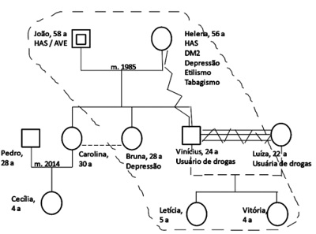
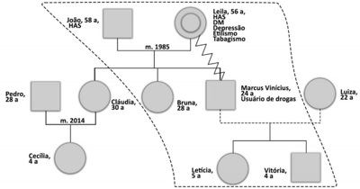
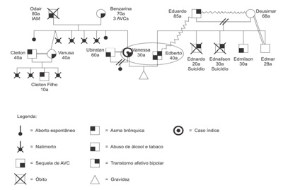
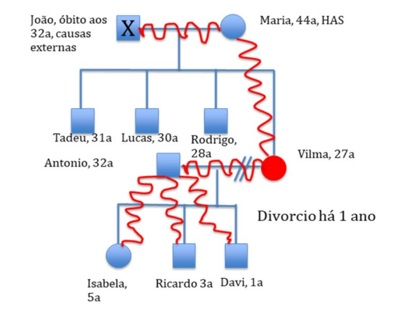

Questão 1 · Relação MédicoPaciente · Conceitos f undamentais em bioética · 4000190109Do ponto de vista histórico, a relação médico-paciente surgiu juntamente com a medicina hipocrática. Diante disso, é correto afirmar que a empatia
A pouco interfere na relação médico-paciente e as pessoas que estão doentes buscam médicos com competência técnica e que sejam especializados no tratamento da morbidade em questão.
B é um sentimento unilateral que deve partir do médico e o objetivo é passar o máximo de confiança para o paciente, para que o tratamento possa ser realizado de maneira eficaz.
C é um sentimento que não se faz necessário no ambiente de UTI quando os pacientes se encontram sedados, pois, nesta situação, não existe uma relação médico-paciente.
D entre o médico e o paciente é importante porque deixa o último mais seguro e disposto a informar com mais desenvoltura os seus problemas, sintomas e dúvidas.
Questão 2 · Método Clínico Centrado na Pessoa · 4000188799A consulta na Atenção Primária à Saúde (APS) é uma atividade central dentro do sistema de saúde, sendo por meio dela que as pessoas atendidas pelo médico de família e comunidade ganham acesso a serviços de maior complexidade. O médico de família e comunidade tem um papel central para usar adequadamente os recursos de saúde e para tal se utiliza do método clínico centrado na pessoa (MCCP). Sobre o MCCP assinale a alternativa correta.
A Deve ser utilizado em todas as consultadas, perpassando os seis componentes como um check list.
B O quarto componente é utilizado para compreender a pessoa como um todo, aspectos da personalidade.
C Orienta-se utilizar o método pelo terceiro componente, planejando o plano terapêutico compartilhado.
D O MCCP não deve ser utilizado em consultas de saúde mental, pois se sobrepõe ao exame do estado mental.
E O segundo componente explora a saúde, a doença e também a experiência da doença vivida.
Questão 3 · Princípios da Medicina de Família e Comunidade · 4000188197A Medicina de Família e Comunidade é uma disciplina acadêmica e cientí ca, com os seus próprios conteúdos educacionais, relacionados à pesquisa, base de evidências e atividade clínica. É uma especialidade clínica orientada para os cuidados primários. A especialidade Medicina de Família e Comunidade caracteriza-se por:
A Gerir simultaneamente os problemas, tanto agudos como crônicos, dos indivíduos.
B Possuir um processo de tomada de decisão independente da prevalência e incidência de doença na comunidade.
C Ter um processo de consulta singular, em que se estabelece uma relação temporalmente pontual, através de uma comunicação médico-paciente efetiva.
D Gerir com prontidão doenças que se apresentem de forma indiferenciada, pois representam doenças numa fase precoce da sua história natural, e que necessitam de intervenção urgente.
Revisar: possível letra faltando em enunciado
Questão 4 · Método Clínico Centrado na Pessoa · 4000186943O Método Clínico Centrado na Pessoa é uma ferramenta bastante utilizada na Medicina de Família e Comunidade. Ele busca orientar o atendimento a partir da perspectiva da pessoa que procura o serviço de saúde. A respeito desse assunto, correlacione as colunas e, em seguida, assinale a alternativa que apresenta a sequência CORRETA. 1. Explorando a doença e a experiência com a doença. 2. Incorporando prevenção e promoção de saúde. 3. Intensificando o relacionamento entre pessoa e médico. 4. Sendo realista. 5. Entendendo a pessoa como um todo. 6. Elaborando um plano conjunto para o manejo dos problemas. ( ) Papéis da pessoa atendida e do médico. ( ) Dimensões da doença (sentimentos, ideias, expectativas). ( ) Compaixão e consciência de si mesmo. ( ) Tempo de consulta e timing. ( ) Identificação precoce. ( ) História de vida da pessoa.
A 5/ 3/ 2/ 1/ 4/ 6
B 6/ 3/ 4/ 5/ 1/ 2
C 6/ 1/ 3/ 4/ 2/ 5
D 1/ 2/ 3/ 4/ 5/ 6
E 4/ 3/ 2/ 5/ 1/ 6
Questão 5 · Ciclo de vida f amiliar · Genograma · Ferramentas de abordagem f amiliar · 4000186609Mulher, 19 anos, vem à consulta programada com seu médico de família para abordagem familiar. Na entrevista, as seguintes informações são obtidas: a paciente índice é solteira, tem duas filhas de 3 e 1 anos, de pais diferentes. Mora com sua mãe de 40 anos, separada, com a qual tem uma relação con ituosa, e com um irmão de 18 anos, solteiro e gari, na casa da avó de 68 anos, viúva. O irmão tem um lho de 3 meses que não mora com ele. A paciente está desempregada, assim como sua mãe, e a família tem como principal renda a aposentadoria da avó. Em relação ao ciclo de vida dessa família, afirma-se: I. Apresenta número menor de etapas de desenvolvimento decorrentes do processo de adaptação. II. Encontra-se no estágio 1 - adolescentes/ adulto jovem solteiro. III. Não é possível construir um genograma com informações de apenas 4 gerações. Está/Estão correta(s) apenas a(s) afirmativa(s)
A I.
B III.
C I e II.
D II e III.
Questão 6 · Método Clínico Centrado na Pessoa · 4000186593“...Muitas doenças são complexas e multifatoriais, exigindo uma abordagem diferente da lógica linear e da tecnologia que podem funcionar tão bem em doenças com uma etiologia especí ca. Experiências de doença como dor crônica, transtornos alimentares, depressão e adição têm uma dimensão existencial que precisa ser levada em conta para que sejam entendidas. Devemos prestar atenção ao sofrimento das pessoas, às suas emoções, crenças e relacionamentos, não apenas por razões humanitárias, mas também porque têm um importante papel na origem das doenças (Foss, 2002).” Sobre o Método Clínico Centrado na Pessoa, pode-se afirmar:
A Em seu Componente 1, entendendo a pessoa como um todo, é mais importante explorar as informações objetivas e tecnicamente relevantes ao diagnóstico diferencial, para, depois, no componente 3, elaborar um projeto comum de manejo de problemas, entender as ideias, sentimentos e expectativas dessa pessoa com relação a sua doença.
B No Componente 3, elaborando um projeto comum de manejo de problemas, o médico deve estabelecer sozinho, quais são as metas e as prioridades a serem alcançadas com o manejo de cada problema que foi priorizado no momento da consulta.
C No componente 04, intensificando o relacionamento entre a pessoa e o profissional de saúde, o médico deve estar atento à transferência: processo pelo qual a pessoa, de forma consciente, projeta, nas outras pessoas que atualmente fazem parte da sua vida – incluindo o médico - pensamentos, comportamentos e reações emocionais originados em outros relacionamentos significativos que ocorreram desde a sua infância.
D Para explorar as 4 dimensões da experiência com a doença, do componente 01, pode-se utilizar o Acróstico SIFE, com as seguintes perguntas durante a entrevista clínica: como você se sente com essa doença, o que você acha que significa essa doença? Como essa doença pode interferir em seu dia a dia? Como você acha que eu poderia ajudá-lo?
Revisar: possível letra faltando em enunciado
Questão 7 · Método Clínico Centrado na Pessoa · 4000186499Existem vários modelos de abordagem à consulta a serem utilizados pelos médicos. Considera-se que o método que engloba e sistematiza os diversos aspectos positivos das diferentes formas de abordagem aos problemas de saúde é o método da abordagem centrada na pessoa. Esse método utiliza como proposta metodológica que uma consulta atenda às necessidades e às expectativas de médicos e pessoas, abrindo caminho para um atendimento adequado em Atenção Primária à Saúde (APS) (Gusso e Lopes, 2012). Assinale a alternativa que contenha 2 (dois) componentes do método clínico de abordagem à pessoa:
A Incorporando a prevenção quaternária e a promoção de saúde.
B Elaborando um projeto de manejo centrado na opinião do médico e sendo realista.
C Elaborando um plano conjunto de manejo de problemas e promoção de saúde.
D Explorando a saúde, doença e a experiência da doença e entendendo a pessoa como um todo.
E Intensificando a relação entre pessoa e médico e sendo otimista.
Questão 8 · FIRO · 4000186187Qual ferramenta de abordagem familiar tem como principal característica a avaliação das relações interpessoais, como intimidade e controle?
A APGAR familiar
B PRACTICE
C FIRO
D GENOGRAMA
Questão 9 · Método Clínico Centrado na Pessoa · 4000186177Considerando o Método Clínico Centrado na Pessoa (MCCP), qual alternativa melhor apresenta seus componentes para aplicação no contexto da ABS?
A Explorar a saúde, a doença e a experiência da doença; propor compreender a pessoa em sua totalidade — o indivíduo, a família e o contexto; estimular o cuidado a partir da elaboração de um plano conjunto de manejo dos problemas; intensificar a relação entre a pessoa e o médico.
B Estruturar o cuidado a partir da relação ética entre o médico e o paciente; promover a integração do usuário com os profissionais da Equipe Multiprofissional; valorizar a medicina biotecnicista e hospitalocêntrica nos cuidados integrais e longitudinais para o combate às doenças.
C Compreender o processo saúde e doença como indivisíveis; considerar aspectos sociais, culturais e ambientais na formulação de procedimentos e condutas de acordo com os preceitos da medicina Baseada em Evidências.
D Abordar o sujeito e seu adoecer a partir da visão biotecnicista; considerar os saberes da clínica e da Saúde Coletiva; orientar o paciente a partir do diagnóstico anátomo-clínico.
Questão 10 · Método Clínico Centrado na Pessoa · 4000186170O método clínico centrado na pessoa envolve a execução de vários componentes. Em relação à avaliação do primeiro componente durante a consulta, quais são as que indicam as dimensões da experiência da doença a serem questionadas?
A Sentimentos, ideias, funções e expectativas.
B Subjetividade, intensidade, funções e expectativa.
C Sentimentos, intensidade, frequência e entendimento.
D Subjetivo, objetivo, avaliação e plano.
Questão 11 · Ciclo de vida f amiliar · Ferramentas de abordagem f amiliar · 4000186167Qual é o instrumento de abordagem familiar que permite conhecer as crises previsíveis e imprevisíveis que passam as famílias, bem como avaliar sua adaptabilidade, vulnerabilidade, funcionalidade, resiliência e seus fatores de risco e proteção?
A Genograma.
B Ecomapa.
C Ciclo Vital.
D Mapa de redes.
Questão 12 · Método Clínico Centrado na Pessoa · 4000185762Paciente de 70 anos, diabético e hipertenso, comparece à consulta na Unidade de Saúde da Família para acompanhamento regular. O médico de família identi cou alguns problemas na alimentação. Como era novo no território, re etiu com o paciente sobre as bases culturais de alguns hábitos alimentares que observou na entrevista. Comentou com o paciente que já havia percebido as mesmas coisas em várias outras pessoas que residem no local. A partir disso, o paciente relatou algumas questões familiares que in uenciam sua alimentação e reconheceu certas heranças culturais em seus hábitos. Qual componente do Método Clínico Centrado na Pessoa é ilustrado no caso acima?
A Explorando a saúde, a doença e a experiência da doença.
B Entendendo a pessoa como um todo.
C Elaborando um plano conjunto de manejo dos problemas.
D Intensificando a relação entre a pessoa e o médico.
Questão 13 · Princípios da Medicina de Família e Comunidade · 4000184610Analise as ações da equipe da estratégia de saúde da família a seguir: I - Realizar ações de gerenciamento na unidade de saúde. II - Realizar o cuidado em saúde da população adscrita, prioritariamente no âmbito da unidade de saúde, no domicílio e nos demais espaços comunitários (escolas, associações, entre outros), quando necessário. III - Fazer uma busca ativa e a noti cação de doenças e agravos de noti cação compulsória e de outros agravos e situações de importância para o grupo. IV - Participar das atividades de planejamento e avaliação das ações da equipe, a partir da utilização dos dados disponíveis. É CORRETO afirmar que são atribuições de todos os membros da ESF as afirmativas previstas em:
A II, III e IV apenas.
B III e IV apenas.
C I e II apenas.
D I, II, III e IV.
Questão 14 · Projeto Terapêutico Singular · 4000184567Homem, 82 anos de idade, portador de insu ciência cardíaca congestiva, arritmia cardíaca, Diabetes mellitus e hipotireoidismo, foi internado por um IAM. Ao planejar a alta hospitalar, decidiu-se pela realização de um Projeto Terapêutico Singular (PTS). Sendo assim, considere as afirmativas a seguir. I. O PTS é composto por quatro momentos: o diagnóstico, a elaboração, a pactuação e a reavaliação. No diagnóstico, o objetivo é descrever as necessidades do sujeito (indivíduo ou coletivo), geralmente em situação complexa. II. O PTS deve ser elaborado pela equipe de saúde, apresentado e validado pela pessoa e pela família. III. A pactuação deve contemplar metas factíveis, prazos adequados e responsáveis por cada ação. Estão corretas as afirmativas
A I e II, apenas.
B I e III, apenas.
C II e III, apenas.
D I, II e III.
Questão 15 · Genograma · 4000184566O casal João e Helena é acompanhado por hipertensão arterial e outras comorbidades. Ambos estão apresentando piora dos níveis pressóricos, apesar de manterem o tratamento. Assim, para uma melhor avaliação, é decidido utilizar ferramentas de abordagem familiar. A partir do genograma, analise as afirmativas a seguir. I. A pessoa índice é o Sr. João. II. Moram na mesma casa João, Helena, Bruna, Vinícius, Luíza, Letícia e Vitória. III. O relacionamento das irmãs Carolina e Bruna é distante. Estão corretas as afirmativas

A I e II, apenas.
B I e III, apenas.
C II e III, apenas.
D I, II e III.
Questão 16 · Genograma · 4000183554A figura ao lado representa uma técnica utilizada na Estratégia de Saúde da Família. Trata-se de

A ecomapa;
B genograma;
C descrição dos tipos de transtornos mentais encontrados em várias amostras;
D distribuição da frequência de casos de transtornos mentais em uma amostra.
Questão 17 · Método Clínico Centrado na Pessoa · 4000183005A decisão compartilhada é um processo no qual médico e pessoa decidem juntos sobre tratamentos, exames, manejo e suporte, levando em conta as preferências da pessoa e as melhores evidências disponíveis. Em qual dos componentes do Método Clínico Centrado na Pessoa podemos fazer uso da decisão compartilhada?
A Elaborando um Plano Conjunto de Manejo dos Problemas.
B Explorando a Saúde, a Doença e a Experiência da Doença.
C Entendendo a Pessoa como um todo.
D Intensificando a relação entre a pessoa e o médico.
Questão 18 · Relação MédicoPaciente · 4000181794De acordo com o Tratado de Medicina de Família e Comunidade (Gusso et al., 2019), um dos princípios da medicina de família e comunidade é a:
A função de servir e coordenar todas as necessidades de saúde da pessoa.
B prestação de cuidado altamente personalizado.
C relação médico-pessoa, que é fundamental para o desempenho do médico de família e comunidade.
D continuidade, já que o cuidado é realizado na saúde e na doença ao longo de um determinado período.
Questão 19 · Genograma · 4000181786Analise o genograma: De acordo com o Caderno de Atenção Básica número 34 do Ministério da Saúde, a interpretação é:

A divórcio.
B violência física.
C morando junto.
D abuso sexual.
Questão 20 · Abordagem Comunitária · Program Saúde da Família PSF e Estratégia Saúde da Família ESF · 4000186276No Brasil, a territorialização é um pressuposto básico do Programa de Saúde da Família (PSF), instituído pelo Ministério da Saúde desde 1994. É um aspecto fundamental para o bom desenvolvimento da prática de um médico de família e comunidade. De acordo com o Ministério da Saúde, o que é a territorialização?
A É uma ferramenta útil para definir padrão de morbidade e o perfil do usuário dos serviços.
B É uma rede de serviços de saúde de um município.
C É a unidade operacional do agente comunitário de saúde.
D É o processo de análise territorial visando a uma base organizativa dos sistemas de saúde e do planejamento da vigilância em saúde.
Questão 21 · Método Clínico Centrado na Pessoa · 4000186275Existem muitas ferramentas da prática do médico de família e comunidade. Uma delas é o método clínico centrado na pessoa (MCCP), um modelo de abordagem à consulta, bastante utilizado na prática. Instrumento extremamente importante na prática clínica e na atenção primária à saúde. Sobre o MCCP, assinale a afirmativa correta.
A O segundo componente do MCCP é sobre entender o contexto que a pessoa está inserida, entendendo a pessoa como um todo.
B Esse método clínico possui cinco componentes.
C O terceiro componente do MCCP é: explorando a saúde e a doença e a experiência da pessoa com a doença.
D Fragmenta os diversos aspectos positivos das diferentes formas de abordagem aos problemas de saúde.
Questão 23 · Abordagem Familiar · Transtornos Ansiosos · 4000177619Eneida, 45 anos, vai à sua médica de família e comunidade (MFC) para acompanhamento. Com queixa de nervosismo intenso, relata que a relação com seu esposo está muito difícil desde que a mãe dela foi morar com eles. Informa também que divergem sobre a forma de educar os 2 lhos, de 15 e 12 anos. A MCF percebe que, nesse caso, seria importante aplicar alguns instrumentos de abordagem familiar. Tendo isso em vista, a médica deve
A encaminhar a paciente ao psicólogo, profissional indicado para a aplicação dos instrumentos de abordagem familiar e para o acompanhamento de famílias com padrão disfuncional de interação.
B oferecer iniciar a terapia familiar, já que essa forma de abordagem é uma competência essencial do médico de família e comunidade.
C agendar uma visita domiciliar, instrumento de abordagem familiar fundamental para avaliar e acompanhar as famílias com padrão disfuncional.
D realizar uma leitura sistêmica, compreendendo o tipo, a dinâmica e a fase do ciclo de vida em que essa família se encontra, para assim planejar as ações mais adequadas.
Questão 24 · Genograma · Ecomapa · 4000177196A família é o primeiro grupo do qual fazemos parte e pelo qual nunca deixamos de ser in uenciados, fato que a torna o eixo estruturante da Atenção Primária à Saúde (APS). Inicia-se a abordagem familiar por meio de três leituras: anatomia da família, desenvolvimento familiar e funcionamento familiar. Na anatomia da família, temos o genograma e o ecomapa, como ferramentas disponíveis para realizar a abordagem familiar. De acordo com os conceitos de genograma e ecomapa, assinale a afirmativa correta.
A O genograma não permite mostrar os problemas presentes na família, não facilitando uma priorização desses para a intervenção.
B O ecomapa é a construção de um genograma composto, e não identifica a rede social e de apoio da família.
C O genograma identifica as relações e ligações dentro do sistema multigeracional da família.
D O genograma não pode ter um foco biomédico, e não deve ser utilizado para organizar as informações clínicas.
Questão 25 · Relação MédicoPaciente · 4000177193Grande parte dos agravos em saúde mental requer manejos terapêuticos que necessitam das chamadas tecnologias leves em saúde. Em relação às modalidades de atendimento na APS (Atenção Primária em Saúde), o acolhimento é um dispositivo potente de cuidado que pode ser praticado por qualquer pro ssional da saúde. Entre as ferramentas facilitadoras do acolhimento, podemos citar como exemplos a escuta ativa e qualificada, o vínculo e a responsabilidade compartilhada. Em relação ao vínculo terapêutico, é correto afirmar que
A é a habilidade de ouvir verdadeiramente o que o outro está dizendo com o empenho de praticar a competência da empatia, aproximando-se ao máximo do universo de valores e de sensações que ele traz.
B dependendo do nível de acometimento do agravo, pode ser mais ou menos autônomo, e trabalha a noção de compartilhamento de responsabilidades além de favorecer a avaliação dos acordos e pactuações durante o tratamento.
C é a mais potente ferramenta para o cuidado em saúde mental, que só se estabelece com base em uma relação de confiança entre paciente e profissional de saúde.
D pressupõe o encontro humanizado em que se deixa claro pela postura e por sinais de comunicação assertivos que foi reconhecido e de fato ouvido o que foi dito.
Questão 26 · Abordagem Comunitária · Medicina Preventiva · 4000176605O médico de uma Equipe de Saúde da Família (ESF) está presente em uma reunião com moradores da área adstrita que discute sobre o papel da ESF no planejamento de um projeto de intervenção coletiva para promoção da saúde local. Um dos moradores pergunta sobre a possibilidade e importância da participação do controle social no projeto. Com relação ao aspecto questionado, o médico deve esclarecer que
A não há espaço para a participação do controle social no desenvolvimento do projeto de intervenção.
B a participação do controle social é legalmente permitida e muito importante para o desenvolvimento do projeto.
C a participação do controle social no desenvolvimento do projeto seria importante, mas não é permitida pela legislação brasileira.
D a participação do controle social no desenvolvimento do projeto só é permitida após aprovação pelo poder legislativo do município.
Questão 27 · Relação MédicoPaciente · 4000175930Jorge chega para consultar com o MFC Gustavo. MFC Gustavo: O que posso lhe ajudar hoje? Jorge: Estou com dor de cabeça, não sei o que é...(cabisbaixo e olhando para o chão)Não tenho conseguido trabalhar direito por causa dela... (ainda olhando para o chão) MFC Gustavo: Mais alguma coisa? Jorge: Estou com di culdade de dormir há algum tempo. Acordo sempre à noite. E também vim para fazer exames de rotina. MFC Gustavo: Mais alguma coisa? Jorge: Não estou muito bem não Dr. (começa a chorar...) MFC Gustavo: (demonstra estar atento, faz silêncio e oferece um lenço de papel paraJorge) Jorge: Tem sido muito difícil tudo isso... desde que minha esposa me deixou... Em relação às habilidades de comunicação utilizadas pelo MFC Gustavo, assinale alternativa CORRETA.
A Iniciar a entrevista com uma pergunta aberta, deixar a pessoa falar por alguns minutos sem interromper e estar atento à comunicação verbal e não verbal facilitam a comunicação médico-paciente.
B O uso de perguntas abertas leva o paciente a falar de questões subjetivas que pouco contribuirão para o diagnóstico e tratamento da causa de base.
C O silêncio atencioso é um sinal de respeito aos sentimentos do paciente e deve ser acompanhado de contenção emocional com afirmações como “fique tranquilo que isso vai melhorar”.
D Usar perguntas abertas e valorizar a comunicação verbal e não verbal ajudam o médico a conseguir fazer o paciente chorar e, dessa forma, atingir o objetivo das habilidades de comunicação que é conhecer a dinâmica psicológicado paciente.
Questão 28 · Abordagem Comunitária · 4000175928A microárea do ACS Fausto teve mais casos de tuberculose nos últimos seis meses apesar de não ser a microárea mais vulnerável do território cuja sua equipe de saúde da família é responsável. Para avaliar as relações de contato com outras microáreas contíguas, assinale a alternativa que apresenta o instrumento de abordagem comunitária que deve ser utilizado.
A Ecomapa.
B Diagnóstico de Demanda.
C Territorialização.
D Georreferenciamento.
Questão 29 · Relação MédicoPaciente · Método Clínico Centrado na Pessoa · 4000175927Há algum tempo o Sr. Pedro, de 65 anos, vinha apresentando episódios recorrentes e cada vez mais frequentes de tosse, que por vezes era acompanhada por falta de ar e expectoração. Recentemente, após realizar uma espirometria, soube-se que estava estabelecido um padrão de doença pulmonar obstrutiva crônica. Mesmo após esse diagnóstico e apesar das diversas conversas que teve com seu médico de família e comunidade a respeito da relação desse hábito com o seu problema de saúde, o paciente continua fumando. A respeito desse caso, assinale a alternativa correta.
A É fundamental que o médico conheça as bases fisiopatológicas da DPOC, tendo pouca importância particularidades no modo como o Sr. João percebe seu adoecimento.
B O contexto familiar do Sr. João terá pouca influência na abordagem a ser realizada, já que o problema de saúde já está estabelecido.
C Perguntar ao Sr. João sobre suas expectativas pode ajudar nessa situação, mesmo que ele continue fumando.
D Cabe ao médico informar ao Sr. João que não poderá continuar lhe prestando assistência caso ele opte por continuar fumando.
Questão 30 · Princípios da Medicina de Família e Comunidade · Método Clínico Centrado na Pessoa · 4000175926Uma das competências que médicos de família devem desenvolver é a coordenação do cuidado. Assinale a alternativa que melhor define essa competência.
A Ter como essência uma relação de confiança ao longo do tempo e exigir a existência de uma fonte regular de atenção e a recorrência à mesma.
B Ser o primeiro serviço a ser procurado quando uma pessoa apresenta uma necessidade de saúde nova ou recorrência de um problema de saúde antigo.
C Incluir a busca por informações a respeito dos problemas e ações realizadas nos diferentes pontos de atenção, integrando as intervenções e reconhecendo a pertinência da informação para o atendimento atual.
D Ter a capacidade de identificar e lidar com o leque completo das necessidades de saúde de um indivíduo, seja resolvendo esses problemas ou orientando onde eles devem ser resolvidos.
Questão 31 · Abordagem Comunitária · 4000175896A influência dos aspectos sociais e culturais no processo saúde-doença é um tema que tem ganhado força mundialmente. Sob este prisma, a “competência cultural”, de acordo com DUCAN et al (2014) pode ser definida como a habilidade dos indivíduos em estabelecer uma:
A comunicação interpessoal efetiva e uma relação de trabalho que permita superar as diferenças culturais existentes;
B comunicação formal e uma relação de trabalho que permita colocar em prática as bases programáticas que interferem na cultura dos usuários;
C comunicação formal e uma relação de trabalho pautada no método colaborativo à luz da cultura local;
D comunicação formal e uma relação de trabalho que permita implementar uma cultura institucional com ênfase na interprofissionalidade;
E comunicação interpessoal efetiva e uma relação de trabalho que permita colocar em prática ações com ênfase nos recursos existentes no território.
Questão 32 · Método Clínico Centrado na Pessoa · 4000175888De acordo com STEWART et al (2017) o cuidado integral às pessoas, famílias e comunidades exige a valorização das experiências que as pessoas têm em relação à suas condições/problemas de saúde. O Método Clínico Centrado na Pessoa permite esse entendimento integrado ao explorar a saúde, a doença e a experiência da doença. Dentre as quatro dimensões que abarcam a experiência da doença podemos destacar:
A as ideias que a pessoa tem sobre o funcionamento da unidade básica de saúde;
B as opiniões da pessoa em relação ao seu médico;
C as opiniões da pessoa sobre o seu tratamento clínico;
D o impacto que a doença teve exclusivamente na autoestima da pessoa;
E as ideias que a pessoa tem sobre sua experiência de adoecimento.
Questão 33 · Método Clínico Centrado na Pessoa · 4000175788“O evento central da vida do pro ssional médico continua sendo o encontro entre pessoas, o qual é representado pela consulta médica, apesar do progresso e do desenvolvimento que aconteceram na sociedade e na medicina. A consulta é a principal manifestação da relação clínica que se estabelece entre o médico e a pessoa, sendo um fator determinante para o seu sucesso, ou não.” Com relação ao Método Clínico Centrado na Pessoa (MCCP) assinale a CORRETA:
A O MCCP deve ser usado somente na atenção primária à saúde.
B MCCP é um modelo de abordagem que facilita a compreensão e a execução das competências essenciais ao médico.
C O MCCP é uma ferramenta que pode ser enriquecida por diversos profissionais e foi criada para aplicar principalmente no atendimento da puericultura.
D Os pacientes excessivamente demandantes e suas necessidades não se aplicam como sujeitos a serem abordados com o MCCP.
Questão 34 · Ciclo de vida f amiliar · Genograma · 4000175787Na prática da Medicina de Família e Comunidade são utilizadas algumas ferramentas que auxiliam a abordagem familiar. Sobre as ferramentas da Medicina de Família e Comunidade, avalie as proposições abaixo e assinale a alternativa CORRETA: I. O genograma é usado principalmente para entender a dinâmica do relacionamento familiar. II. O genograma e o ecomapa são instrumentos de avaliação familiar de representação gráfica. III. A ferramenta que identi ca a rede social, o contexto no qual a pessoa/família está inserida e os sistemas envolvidos é o ciclo de vida. IV. Na elaboração do genograma, os filhos aparecem em ordem cronológica de nascimento, da esquerda para a direita. V. O ciclo de vida da família estuda as fases de transformação e desenvolvimento da família, sem relação com as crises previsíveis (esperadas) e imprevisíveis (inesperadas).
A Somente as afirmativas I e IV são corretas.
B Somente as afirmativas I, II, IV e V são corretas.
C Somente as afirmativas II, III e V são corretas.
D Somente as afirmativas I, II e IV são corretas.
Revisar: possível letra faltando em enunciado
Questão 35 · Método Clínico Centrado na Pessoa · 4000175784Sobre o método clínico centrado na pessoa, modelo de abordagem utilizado na medicina de família e comunidade, assinale a alternativa CORRETA:
A O método clínico centrado na pessoa é composto por 4 componentes que, quando aplicados na prática, devem ser abordados de forma individualizada, devido cada componente ser independente do outro.
B Os conceitos de
C A avaliação da pessoa como um todo, compreendendo seu contexto de vida, incluindo conhecimento da família, trabalho, crenças e vivências não é importante no método clínico centrado na pessoa.
D O método clínico centrado na pessoa é um modelo de abordagem em que o médico exerce todo controle durante a consulta intensificando, dessa forma, a relação médico-paciente.
Questão 36 · Ferramentas de abordagem f amiliar · 4000175568No contexto da Medicina de Família e Comunidade, pode ser necessário o uso de ferramentas de abordagem familiar. Uma delas é descrita como “instrumento de avaliação destinado a re etir a satisfação de cada membro da família. A partir de um questionário predeterminado, as famílias são classificadas como funcionais, moderadamente disfuncionais e gravemente disfuncionais”. Esta ferramenta refere-se ao
A P.R.A.C.T.I.C.E.
B A.P.G.A.R. familiar.
C F.I.R.O.
D L.E.V.E.R.
Questão 37 · Relação MédicoPaciente · 4000175547Abordar assuntos ligados a espiritualidade/religiosidade do paciente pode ser ferramenta útil na prática clínica, sobre esse tema pode-se afirmar, EXCETO:
A a maioria dos pacientes não gostariam que assuntos relacionados a sua espiritualidade/religiosidade fossem abordados no intercurso do tratamento
B crenças religiosas influenciam (positivamente ou negativamente) as decisões médicas, daí a necessidade de identificar as necessidades espirituais e religiosas do paciente
C atividades e crenças religiosas podem estar associadas a melhor qualidade de vida e melhor suporte social para o paciente
D a objetividade na abordagem dos aspectos religiosos/espirituais é importante para para que assuntos emocionais não influenciem o julgamento médico
Questão 38 · Projeto Terapêutico Singular · 4000175427O Projeto Terapêutico Singular (PTS) é um dispositivo de produção de cuidado em saúde que contribui para a integralidade das ações, assim, representa:
A Um conjunto de propostas de condutas terapêuticas elaboradas individualmente por cada especialista membro da equipe de saúde.
B Um conjunto de propostas de condutas terapêuticas que se constitui independente da demanda do usuário e que considera como prioritária a consolidação das propostas das equipes envolvidas.
C Um conjunto de propostas de condutas terapêuticas articuladas, para um sujeito individual ou coletivo, resultante da discussão entre a equipe interdisciplinar e matricial se necessário.
D Um conjunto de propostas de condutas ou coletivo, que resulta da discussão entre a equipe interdisciplinar e matricial se for necessário. terapêuticas desarticuladas, para um sujeito individual ou coletivo, que resulta da discussão entre a equipe interdisciplinar e matricial se for necessário.
E Um conjunto de propostas de condutas terapêuticas estruturadas pelo profissional de saúde que primeiro atendeu o usuário, e adotado como normativo pelos demais especialistas da equipe de saúde.
Questão 39 · Medicina Preventiva · Ecomapa · 4000175359O Ecomapa é um instrumento de avaliação familiar que identi ca, pela representação grá ca, fatores de ordem social, cultural e econômica, bem como as relações familiares e delas com o seu ambiente, que podem in uenciar na saúde de uma família ou de um indivíduo. A esse respeito, assinale a afirmativa correta.
A Nele são representadas as ligações entre família e indivíduo e os recursos do meio, suas intensidades, proximidades, mas sem direcionar o fluxo de troca de energia entre eles.
B Podem-se utilizar símbolos para representar os integrantes do familiograma dentro do ecomapa. Homens são representados por círculos, e mulheres, por quadrados.
C Permite a visualização da rede de apoio social de uma família, identificando suas relações e ligações com o meio e seus contextos. Demonstra o equilíbrio entre as necessidades e os recursos dessa família.
D Tal instrumento de avaliação é imutável, ou seja, uma vez delineado, ele não deverá ser alterado.
Revisar: possível letra faltando em enunciado
Questão 40 · Projeto Terapêutico Singular · 4000175314O apoio matricial ou matriciamento objetiva assegurar retaguarda assistencial especializada e suporte técnico-pedagógico às equipes de referência. Depende da construção compartilhada de diretrizes clínicas e sanitárias entre os componentes da equipe matriciador e de referência. Sobre o tema acima, assinale a alternativa incorreta:
A É um modo de produzir saúde em que duas ou mais equipes, num processo de construção compartilhada, criam uma proposta de intervenção pedagógico-terapêutica.
B Na horizontalização decorrente do processo de matriciamento, o sistema de saúde se reestrutura em dois tipos de equipes: equipe de referência e equipe de apoio matricial, objetivando ampliar as possibilidades de realizar-se clínica ampliada e integração dialógica entre distintas especialidades e profissões.
C Tem como princípios: o encaminhamento ao especialista, atendimento individual pelo profissional de saúde mental e intervenção psicossocial coletiva realizado apenas pelo profissional de saúde mental, sendo monopólio dessa especialidade.
D Deve proporcionar a retaguarda especializada da assistência, assim como um suporte técnico-pedagógico, um vínculo interpessoal e o apoio institucional no processo de construção coletiva de projetos terapêuticos junto à população.
E Pode ser solicitado nos casos em que a equipe de referência sente necessidade de apoio para abordar e conduzir um caso que exige, por exemplo, esclarecimento diagnóstico, estruturação de um projeto terapêutico e abordagem da família.
Questão 41 · Projeto Terapêutico Singular · 4000175313O Projeto Terapêutico Singular (PTS) é prática integrada e visa à construção de ações interdisciplinares de cuidado. Cada membro da equipe dispõe de seu saber e suas técnicas para envolver a família num processo ampliado de cuidado. A respeito do PTS, pode-se afirmar que:
A Envolve um conjunto de propostas de condutas terapêuticas padronizadas pelo Ministério da Saúde, direcionadas exclusivamente a um indivíduo, não podendo ser aplicada a uma família ou grupo de pessoas.
B Tem como objetivo traçar uma estratégia de intervenção, contando com os recursos da equipe, do território, da família e do próprio sujeito e envolve uma pactuação entre esses mesmos atores.
C Não almeja a singularidade como elemento central de articulação, assim como também não exige a presença e colaboração de sujeitos comprometidos com propostas e condutas terapêuticas articuladas, já que as decisões são tomadas pela equipe.
D Não deve ser dirigido às famílias em situações graves. Além de que o vínculo entre os profissionais envolvidos e os usuários deve ser evitado, a fim de não criar relações que possam interferir no seguimento do cuidado em saúde.
E Por ser singular, não é necessário explorar a visão familiar ou social sobre a problemática, devendo centrar-se nos componentes biológicos ou nosológicos da doença, pois este é o foco do trabalho em atenção primária em saúde.
Questão 42 · Ferramentas de abordagem f amiliar · 4000175312Sobre os instrumentos de avaliação familiar existentes utilizados pelos pro ssionais da equipe de saúde de família, assinale a alternativa correta:
A A Escala de Coelho-Savassi classifica a situação de risco das famílias e não deve ser utilizada para estabelecer prioridades na visita domiciliar. Deve ser aplicada exclusivamente pelo médico da unidade.
B Ainda sobre a escala de Coelho-Savassi, é aplicada às famílias para determinar seu risco social e de saúde, refletindo o potencial de adoecimento de cada núcleo familiar.
C O Genograma identifica as relações e ligações da família e de seus membros com o meio e a comunidade onde habitam, mostrando sua rede de apoio social, por exemplo.
D O ecomapa apresenta um modo sucinto e universal de representação do grupo familiar, compreensível por todos que o conhecem, evitando textos longos, podendo ser refeito quando ocorrem mudanças significativas na família.
E O ecomapa e o genograma, como instrumentos de avaliação familiar, não podem aparecer de forma complementar dentro de um prontuário familiar, pois um invalida as informações do outro. Dessa forma, é necessário escolher entre um dos dois instrumentos.
Questão 43 · Relação MédicoPaciente · 4000175136Sobre os Modelos de relação médico paciente, é INCORRETO afirmar:
A O médico tomas as decisões, visando ao bem estar do paciente no modelo Paternalista.
B O médico tenta elucidar os valores e expectativas do paciente, para tomar a decisão de acordo com eles, no modelo Interpretativo.
C O modelo deliberativo é bem avaliado entre os profissionais, uma vez que é deliberado pelo paciente a escolha de seu tratamento.
D No método Informativo o trabalho do médico implica em oferecer as informações para que o paciente tome as decisões a respeito do seu tratamento.
E Nenhuma das alternativas anteriores.
Questão 44 · Ciclo de vida f amiliar · 4000173599A família pode ser considerada como a unidade-base para o treinamento social. Trata-se do ambiente em que se experimenta o primeiro senso de pertencimento, identidade e conexão. Sobre os tipos familiares, assinale a alternativa INCORRETA.
A A família unitária é composta por uma só pessoa, como é o caso de uma viúva sem filhos.
B A família extensiva é constituída por mais de uma geração, podendo ter também vínculos colaterais, como tios, primos e padrinhos.
C A família reconstituída é formada por pessoas que moram juntas e desempenham papéis parentais em relação a uma criança ou a um adolescente.
D A família nuclear é formada pelos familiares consanguíneos da pessoa referência, ou seja, um núcleo. Um exemplo é o casal e seus filhos.
E A família monoparental é constituída de um dos pais biológicos e o filho, ou filhos, independentemente de vínculos externos ao núcleo.
Questão 45 · Método Clínico Centrado na Pessoa · 4000173598O método clínico centrado na pessoa (MCCP) é um modelo de abordagem, que facilita a compreensão e a execução das competências essenciais. Sobre os componentes do MCCP, analise os itens abaixo: I. Explorando a saúde, a doença e a experiência da doença. II. Entendendo a pessoa como um todo: o indivíduo, a família e o contexto. III. Elaborando um plano conjunto de manejo dos problemas. IV. Intensificando a relação entre a pessoa e o médico. V. Exercendo a compaixão: sendo humanista. Assinale a alternativa CORRETA.
A I, II, III, IV e V estão corretos.
B Apenas I, II, III e IV estão corretos.
C Existem, apenas, três corretos.
D Existem, apenas, dois corretos.
E Existe, apenas, um correto.
Questão 46 · Abordagem Familiar · 4000171036Mulher de 64 anos, aposentada, separada há 15 anos, mora com seu lho. Em abril de 2020, seu lho perdeu o emprego e sua lha foi internada com covid-19 e faleceu após dois meses. Ela procurou a UBS, pois estava sentindo dores no peito sempre que se aborrecia com o lho: “Ele é um menino muito bom, sente muito a falta da irmã e está com medo de sair de casa para arrumar emprego, mas as contas só aumentam”. Com base nesses dados, neste momento, a família está vivenciando uma crise do tipo:
A normativa
B ninho vazio
C paranormativa
D família reconstituída
Questão 47 · Relação MédicoPaciente · 4000171031Considerando a prevalência crescente das doenças crônicas e a importância da comunicação adequada na relação médico-paciente, é correto afirmar que a(s):
A perguntas com “por que” podem ser utilizadas, pois favorecem na busca do diagnóstico com mais rapidez e precisão
B comunicação é um processo interativo, por isso, deve-se demonstrar surpresa ou reprovação e, até mesmo, interromper o relato do paciente
C necessidades individuais e os contextos não são tão variáveis em uma comunidade, logo, a solução apropriada serve para outras localidades
D habilidade de aconselhar, transmitir confiança ou simplesmente ouvir são atitudes igualmente terapêuticas na relação médico-pessoa
Questão 48 · PRACTICE · 4000170540Qual é a ferramenta da medicina de família que, para ser utilizada, exige a realização de uma conferência familiar:
A Ciclo de vida familiar
B Practice
C Ecomapa
D Firo
Questão 49 · Ferramentas de abordagem f amiliar · 4000169868A escala de Coelho e Savassi trata-se de um instrumento muito importante na Atenção Primária, cujo principal objetivo é:
A Auxiliou no agendamento de consultas ambulatoriais.
B Definir as competências dos profissionais de uma Equipe de Saúde da Família.
C Estabelecer a carga horária dos profissionais de uma Equipe de Saúde da Família.
D Estratificação de risco familiar.
Questão 50 · PRACTICE · FIRO · 4000169865Em relação às ferramentas de abordagem familiar e suas definições, numere a coluna da direita de acordo com a da esquerda. 1- APGAR familiar 2- PRACTICE 3- GENOGRAMA 4- FIRO ( ) Ferramenta utilizada para avaliar principalmente relações interpessoais. ( ) Formulário autoadministrado que busca avaliar sua percepção pessoal em relação a sua família. ( ) Heredograma utilizando relações interpessoais entre os familiares. ( ) Roteiro ou diretriz para condução de uma conferência familiar. Assinale a sequência correta.
A 4, 1, 3, 2
B 2, 4, 1, 3
C 1, 2, 3, 4
D 2, 3, 1, 4
Questão 51 · Método Clínico Centrado na Pessoa · 4000169853“O médico de família e comunidade deve ser competente no Método Clínico Centrado na Pessoa ao receber aqueles que buscam ajuda, devendo investigar suas queixas de maneira integrada, sensível e apropriada, demonstrando empatia e harmonizando a relação clínica” (Gusso, 2019). Qual a alternativa que melhor representa os componentes do Método Clínico Centrado na Pessoa (MCCP)?
A Compreende o processo saúde e doença como indivisíveis; considera aspectos sociais, culturais e ambientais na formulação de procedimentos e condutas de acordo com os preceitos da Medicina Baseada em Evidências.
B Estrutura-se na relação médico paciente; baseia-se em princípios éticos e na medicina em que as atividades dos profissionais da Equipe Multiprofissional são baseadas em evidências; considera a visão biotecnicista e hospitalocêntrica nos cuidados integrais e longitudinais para o combate á doença.
C Explora a saúde, a doença e a experiência da doença; propõe entender a pessoa em sua totalidade - o indivíduo, a família e o contexto; elabora um plano conjunto de manejo dos problemas; intensifica a relação entre a pessoa e o médico.
D Aborda o sujeito e seu adoecer a partir da visão biotecnicista; considera os saberes da clínica e da Saúde Coletiva; orienta o paciente a partir do diagnóstico anátomo-clínico.
Questão 52 · Método Clínico Centrado na Pessoa · 4000169131“Uma premissa importante para o Método Clínico Centrado na Pessoa é de que existem diferenças entre aquilo que chamamos de doença (“disease”) e a vivência absolutamente única de cada pessoa com a doença. Esse processo individual pode ser denominado de adoecimento, ou doença experiência.” De acordo com os conceitos de MCCP, assinale a alternativa que relaciona corretamente o número da tabela abaixo com o exemplo.
A 1- Síndrome do túnel do carpo, 2- Hipertensão Arterial Sistêmica 3- Perda do emprego.
B 1- Infarto Agudo do Miocárdio, 2- Hipertensão Arterial Sistêmica 3- Perda de parente próximo.
C 1- Hipertensão Arterial Sistêmica, 2- Perda de parente próximo, 3- Lombalgia.
D 1- Diabetes melittus, 2- Hipertensão Arterial Sistêmica 3- Síndrome do túnel do carpo.
E 1- Infarto Agudo do Miocárdio, 2- Perda de parente próximo, 3- Hipertensão Arterial Sistêmica.
Questão 53 · Ferramentas de abordagem f amiliar · Transtornos Ansiosos · 4000168931Médica atende mulher de 25 anos com queixa de ansiedade, di culdade para dormir e leve dor abdominal. História clinica e exame físico sem achados de relevância ou sinais de alerta para o caso. Ao realizar a abordagem familiar, descobre que a paciente se casou há poucos meses e está tendo di culdade para as tarefas de cotidiano com seu parceiro, o que tem aumentado seu nível de estresse e prejudicado seu trabalho. Que ferramenta de abordagem familiar foi utilizada no caso?
A Ciclo de Vida da Família.
B Genograma.
C Ecomapa.
D PRACTICE.
Questão 54 · Método Clínico Centrado na Pessoa · 4000168928Um medico que atua na Atenção Primaria à Saúde percebeu, após conversar com alguns colegas, que tinha grande di culdade de compartilhar algumas decisões terapêuticas com seus pacientes. Na visão dele, determinação da conduta a ser adotada nas consultas era uma ação exclusiva do médico. Ao perceber que essa sua di culdade em estabelecer uma relação mais horizontal com as pessoas prejudicava o cuidado prestado a certos tipos de pacientes resolveu procurar ajuda pro ssional para lidar de outra forma com suas emoções. Em qual componente de Método Clinico Centrado na Pessoa a atitude do médico melhor se enquadra?
A Explorando a saúde, a doença e a experiência da doença.
B Entendendo a pessoa como um todo (individuo, família e contexto).
C Elaborando um plano conjunto de manejo dos problemas.
D Fortalecendo a relação entre a pessoa e o médico.
Questão 55 · Índice de Vulnerabilidade Social IVS · 4000168187Considere que, em uma reunião com sua nova equipe de saúde da família, o Dr. Flávio recebeu a demanda de quatro visitas domiciliares. Foi decidido que a priorização das visitas seria feita a partir da escala de vulnerabilidade familiar de Coelho e Savassi. Dentre as quatro famílias a seguir, qual deverá receber a primeira visita?
A Senhora Débora, 72 anos de idade, diabética e senhor Leonardo, 75 anos de idade, hipertenso e diabético, moram em casa de quatro cômodos com saneamento básico.
B Senhora Andreia, 24 anos de idade, desempregada, mora com o avô, Rodrigo, de 70 anos de idade, acamado; e com três filhos de 2, 4 e 6 anos de idade, em casa de quatro cômodos.
C Senhora Carla, 68 anos de idade, mora com o esposo, Eduardo, de 70 anos de idade, hipertenso, ambos analfabetos, moram em casa de dois cômodos.
D Senhor Helvécio, 80 anos de idade, diabético, teve ambas as pernas amputadas, por isso, acamado; mora com esposa, Alice, de 68 anos de idade, em casa de três cômodos.
Questão 56 · Genograma · 4000168180Analise o genograma a seguir e considere as afirmativas a respeito dele: I. João e Leila são casados desde 1985 e têm três filhas: Cláudia, Bruna e Luiza. II. Leila tem um relacionamento conflituoso com Marcus Vinícius. III. Cláudia, Pedro e a filha Cecília não moram com João e Leila. Estão corretas as afirmativas

A I e II, apenas.
B I e III, apenas.
C II e III, apenas.
D I, II e III.
Questão 57 · Abordagem Comunitária · Medicina Preventiva · 4000167572A visita domiciliar (VD) tem como prioridade o diagnóstico da realidade do indivíduo e as ações educativas. Geralmente é programada e serve para subsidiar intervenções. Sua prática é importante na
A abordagem e no diagnóstico de problemas.
B substituição da internação hospitalar.
C identificação de situações omitidas pelo paciente.
D desconstrução de hábitos culturais da família.
E separação entre os problemas “do consulto
Questão 58 · Genograma · 4000167560Em relação ao genograma familiar, uma das ferramentas que podem auxiliar o médico atuante na atenção primária em saúde, é correto afirmar:
A Estuda a dinâmica familiar.
B Requer conhecimento profundo de genética.
C Contempla estressores horizontais, como os antecedentes familiares.
D É composto por uma geração para a sua interpretação.
E É de natureza diagnóstica, sem caráter intervencionista.
Questão 59 · Método Clínico Centrado na Pessoa · 4000167559O método clínico centrado na pessoa (MCCP) é uma das ferramentas bastante utilizadas na medicina de família e comunidade no cenário da atenção básica. É constituído por 4 componentes que se interligam. O 1º componente corresponde ao “Explorando a saúde, a doença (objetivo) e a/o
A experiência da doença".
B conhecimento da pessoa como um todo".
C estreitamento da relação médico-paciente".
D compartilhamento do poder".
E ser realista".
Questão 61 · Método Clínico Centrado na Pessoa · 4000167410ASSINALE A ALTERNATIVA CORRETA EM RELAÇÃO AOS PRINCÍPIOS DA CLÍNICA AMPLIADA E COMPARTILHADA, DA MEDICINA CENTRADA NA PESSOA E DA MEDICINA DAS NARRATIVAS:
A São desenvolvidos pela Atenção Primária para qualificar o trabalho médico.
B Valorizam a autonomia e autoconhecimento dos pacientes.
C Restringem-se ao trabalho da equipe de saúde da família.
D Cada um deles é uma etapa do Projeto Terapêutico Singular.
Questão 62 · Abordagem Comunitária · Princípios da Medicina de Família e Comunidade · 4000167179Medicina de Família e Comunidade Metade da população mundial vive em áreas rurais, mas menos de 25% dos pro ssionais médicos atuam nessas áreas. No Brasil, estima-se que 30% da sua população seja rural. Para além da carência de pro ssionais nesse ambiente, raramente se abordam as especi cidades do cuidado dessa população ao longo da formação médica. Assinale a alternativa correta sobre o cuidado a populações rurais.
A A rede de atenção à saúde deve ter a mesma conformação das áreas urbanas, com base no princípio da equidade do SUS.
B Os riscos ocupacionais são muito distintos dos urbanos, o que leva a um padrão de adoecimento diferente na comunidade.
C Os atendimentos em saúde devem ser direcionados para os centros urbanos mais próximos.
D Os atendimentos em saúde, sejam básicos ou especializados, precisam ser descentralizados a todas as áreas rurais.
E O cuidado em saúde da população rural muito pouco se distingue do cuidado à população urbana, justificando a formação prioritariamente voltada a essa última.
Questão 63 · Método Clínico Centrado na Pessoa · 4000167178É uma sexta-feira, véspera de carnaval, e Júnia traz seu lho, Tomás, de 6 anos, ao pronto atendimento devido a quadro de do r de garganta iniciada há 1 dia. A criança apresenta-se afebril, sem linfonodos palpáveis, sem exsudato em amígdalas e presença de tosse. Pela avaliação dos critérios de Centor, o médico assistente avalia que se trata de uma faringite viral e orienta Júnia a tratar Tomás com sintomáticos e levá-lo à Unidade Básica de Saúde em caso de ausência de melhora em 3 dias. Júnia insiste na prescrição de antibiótico, lembrando que, na última vez que Tomás teve o mesmo sintoma, a melhora só ocorreu após início do uso de amoxicilina. Nessa situação, o médico assistente
A deve prescrever o antibiótico, já que o paciente tem autonomia para escolher seu tratamento independentemente da avaliação clínica.
B deve prescrever o antibiótico, já que o retorno para uma reavaliação na Unidade Básica de Saúde será inviável durante o feriado de Carnaval.
C pode considerar a prescrição antecipada de antibiótico, compartilhando a decisão de acordo com os valores e crenças das pessoas.
D não deve prescrever o antibiótico, já que o quadro é comprovadamente viral e seu uso serviria apenas para aumento da resistência bacteriana.
E não deve prescrever o antibiótico, já que o médico tem autonomia para escolher o tratamento independentemente da opinião do paciente.
Questão 64 · Método Clínico Centrado na Pessoa · 4000167177Dr. João é médico da Estratégia Saúde da Família e está atendendo Maria, 36 anos, pela terceira vez em dois meses, devido a quadro de dores de cabeça recorrentes. Após nova avaliação clínica, João descarta sinais de alarme e conclui se tratar de cefaleia tensional. Preocupado devido à resposta insatisfatória até então com o tratamento prescrito, Dr. João resolve entender um pouco mais do contexto familiar e comunitário de Maria, quando descobre que ela possui diversos estressores sociais, incluindo di culdades econômicas e violência doméstica. Com base nesse caso e nas políticas de saúde vigentes, assinale a alternativa correta.
A O caso exemplifica que a prática clínica é ineficaz para o cuidado em saúde da população.
B A aplicação do método clínico centrado na pessoa amplia a capacidade de compreensão e resolução de problemas.
C A atuação do médico foi superficial, já que o caso descrito apresenta elevado risco de complicações e demanda exames mais específicos.
D Cefaleia é um motivo infrequente de consultas na Atenção Primária à Saúde, devendo essa paciente ser encaminhada ao nível secundário.
E A atuação do médico foi exagerada, já que a responsabilidade profissional com o paciente se limita ao diagnóstico clínico.
Questão 65 · Relação MédicoPaciente · 4000166919A relação médico-paciente deve ser analisada e aprimorada cada vez mais para que seja sólida e e caz, de modo que o paciente consiga expressar o que realmente sente naquele momento e o médico possa conduzi-lo a um diagnóstico mais e ciente. Ocorre que nem sempre tal almejada relação é possível devido a inúmeros fatores, como baixa remuneração, altas cargas horárias de plantão, baixa produtividade, precária qualidade de vida, demandas em massa, dentre outros. Dessa forma, certas condutas de ambas as partes são necessárias para que haja um avanço na referida relação, EXCETO:
A Conhecer acerca das características da personalidade, do funcionamento psíquico e do comportamento humano.
B Conhecer-se em profundidade, abrindo-se e revelando-se de forma ampla, sem restrições.
C Cuidar-se em relação ao sono, à dieta e à prática de exercícios físicos.
D Reconhecer os limites, de forma limitada, e aptidões, sempre buscando aprender cada vez mais, em termos médicos ou humanos.
Revisar: possível letra faltando em enunciado
Questão 66 · Abordagem Comunitária · 4000166861De acordo com o Tratado de Medicina de Família e Comunidade: princípios, formação e prática, elaborado por Gusso e colaboradores (2019), com relação ao diagnóstico de saúde da comunidade:
A conceitualmente, é um estudo longitudinal, iniciando-se pelas variáveis de exposição para se atingir as variáveis de desfecho.
B por ser um estudo descritivo, não há necessidade de redação de protocolo de pesquisa, com envio a um Comitê de Ética e Pesquisa.
C nem sempre é necessário estudar a população inteira para que sejam obtidas informações importantes úteis e válidas sobre ela. Porém, o uso da amostragem probabilística é importante, pois possui alta capacidade de generalização.
D em geral, é preferível fazer uso de entrevistadores que tenham ensino superior na área da saúde, para valorizar a maior autonomia inerente a esses indivíduos, o que favorece a padronização no momento da coleta dos dados.
Questão 67 · Princípios da Medicina de Família e Comunidade · 4000166859De acordo com o Tratado de Medicina de Família e Comunidade: princípios, formação e prática, elaborado por Gusso e colaboradores (2019):
A um dos princípios da medicina de família e comunidade é que o médico dessa especialidade deve morar na comunidade para que esteja à sua disposição sempre que necessário.
B nos países desenvolvidos, um serviço de saúde integrado de atenção primária visa melhorar a saúde da população por ser uma das portas de entrada para a saúde, além dos processos de cuidado em saúde e disponibilidade de acesso no período comercial.
C na prática diária do médico de família e comunidade, os problemas, quando comparados a outros especialistas, são vistos no início, quando ainda são pouco definidos.
D o médico de família e comunidade tem como foco essencial a qualificação e competência no método clínico centrado na doença, devendo investigar suas queixas de maneira integrada, dominando os problemas mais prevalentes na atenção primária.
Questão 68 · Método Clínico Centrado na Pessoa · 4000166621A respeito do Método Clínico Centrado na Pessoa (MCCP), analise as afirmativas a seguir. I . Entre as competências necessárias para a abordagem centrada na pessoa tem-se a competência intersubjetiva: capacidade de escutar, interpretar, discernir e refletir e a competência emocional: perceber e entender os sentimentos. II. O terceiro componente do MCCP, Elaborando um Plano Conjunto de Manejo dos Problemas, objetiva prescrever um plano de manejo dos problemas, definindo metas e responsabilidades de cada pessoa da família III. O primeiro componente do MCCP Explorando a Saúde, a Doença e a Experiência da Doença tem-se a diferenciação entre doença e enfermidade. A doença tem explicações biológicas e objetivas. Já a enfermidade traz a experiência pessoal de quem tem a doença. IV. O segundo componente do MCCP Entendendo a Pessoa como um todo tem duas seções, sendo a segunda seção o contexto individual de cada indivíduo que representa qual a real situação vivida pela pessoa, suas di culdades e anseios e qual a importância dos determinantes de saúde. Está(ão) correta(s) a(s) afirmativa(s)
A I, apenas.
B II, apenas.
C I, III e IV, apenas.
D I, II, III e IV.
Questão 69 · Projeto Terapêutico Singular · 4000166620A respeito de Projeto Terapêutico Singular (PTS), analise as afirmativas a seguir. I . O PTS é composto por quatro momentos: o diagnóstico, a elaboração; a pactuação e a reavaliação. No momento diagnóstico, o objetivo é descrever as necessidades do sujeito (indivíduo ou coletivo), geralmente em situação complexa. I I . O PTS deve ser elaborado, preferencialmente, pela equipe de saúde-pessoa-família, o que propicia aumento do comprometimento entre eles. III. A pactuação deve contemplar metas factíveis, prazos adequados e responsáveis por cada ação. Estão corretas as afirmativas
A I e II, apenas.
B I e III, apenas.
C II e III, apenas.
D I, II e III.
Questão 70 · Método Clínico Centrado na Pessoa · 4000166537Considere a seguinte interação a seguir: - Paciente: “(...) essas manchas já tem uns 5 anos, e isso tem me deixado muito preocupada.” - Médico: “Entendi, você está me falando que já tem essas manchas há uns 5 anos, mas agora você tem cado mais preocupada. Aconteceu alguma coisa diferente ou tem alguém que você conhece que tem ou teve essas manchas também?” - Paciente: “Ah, doutor, minha mãe cou com essas manchas um tempão e agora descobriram um problema nos rins dela e ela vai precisar até de hemodiálise.” Considerando o Método Clínico Centrado na Pessoa, o principal componente aplicado a essa situação foi:
A Explorando a saúde, a doença e a experiência da doença.
B Conhecendo a pessoa como um todo.
C Fortalecendo a relação entre a pessoa e o médico.
D Elaborando um plano conjunto de manejo dos problemas.
Revisar: possível letra faltando em enunciado
Questão 71 · Método Clínico Centrado na Pessoa · 4000166532A prática médica centrada na pessoa, característica principal do médico de família e comunidade, deve ser capaz de fazer uma distinção entre doença (
A Ao explorar um problema de saúde, é essencial que o médico compreenda a preocupação do paciente e o entendimento que ele tem sobre o seu problema, além do impacto do mesmo em sua vida e funcionalidade.
B O adoecimento ou experiência com a doença é um fenômeno que ocorre de forma semelhante em todos os indivíduos acometidos por determinada patologia.
C A doença, entendida como fenômeno em que há uma alteração da homeostasia do indivíduo, é um processo analisado sob as seguintes características: sofrimento, idéias, função e expectativas.
D É primordial que o médico dê maior importância à fisiopatologia de uma doença do que àquilo que o paciente acredite que seja a causa de seus problemas de saúde.
Questão 72 · Relação MédicoPaciente · Método Clínico Centrado na Pessoa · 4000166531O início de uma consulta médica é essencial para a obtenção de informações relativas ao problema da pessoa que procura atendimento. Uma técnica CORRETA a ser utilizada nos momentos iniciais de uma consulta é:
A Delimitar o motivo da consulta somente dentro da queixa principal do paciente.
B Utilizar perguntas fechadas o mais precocemente possível a fim de direcionar a entrevista.
C Registrar as informações da história clínica em prontuário (digital ou físico) assim que o paciente começar a falar.
D Deixar o paciente falar livremente sobre seu problema por pelo menos dois minutos.
Questão 73 · Princípios da Medicina de Família e Comunidade · 4000166530A atuação do médico de família e comunidade no âmbito da Atenção Primária à Saúde possui características próprias. Uma das alternativas abaixo descreve corretamente uma dessas características. Qual?
A Abordagem centrada na doença.
B Capacidade de lidar com a incerteza clínica.
C Utilização de raciocínio clínico biomédico e reducionista.
D Planejamento terapêutico centrado na opinião do médico.
Questão 74 · Medicina Preventiva · Relação MédicoPaciente · Medicina de Família e Comunidade · 4000166528O domínio de habilidades de comunicação é uma competência que todos os médicos devem ser capazes de executar, sendo a Prevenção de Demandas Aditivas uma das principais habilidades a serem desenvolvidas, possibilitando que todas as queixas e demandas do paciente sejam apresentadas no início da consulta. O questionamento mais apropriado que o médico deve fazer ao paciente para prevenir demandas aditivas é exemplificada corretamente pela pergunta:
A “Quer falar mais alguma coisa?”
B “Quando começaram seus sintomas?”
C “O que você espera que eu faça por você hoje?”
D “Como posso lhe ajudar hoje?”
Questão 75 · Projeto Terapêutico Singular · 4000166268Quanto ao Projeto Terapêutico Singular, é correto afirmar:
A é uma ferramenta para o estudo minucioso de todas as etapas da evolução da doença do indivíduo.
B tem como principal objetivo facilitar o estudo de casos complexos em situações de ensino-aprendizagem.
C é um importante dispositivo utilizado pelo médico para cuidar de casos complexos na atenção básica.
D é uma das ferramentas das equipes de saúde que auxilia na tomada de decisões acerca de um caso individual ou coletivo.
Questão 76 · Ferramentas de abordagem f amiliar · 4000166210Uma paciente de trinta anos de idade, que está no sétimo dia de puerpério, compareceu à consulta com o seu médico, onde ocorreu o seguinte diálogo. Médico – Mas me fala, no mais como estão as coisas contigo? Paciente – Não está nada bem, a minha vontade é car na cama o dia inteiro. Estou muito cansada e, quando o bebê chora, fico muito irritada. Depois eu me sinto culpada. A minha vontade é de dormir o dia inteiro e não ver ninguém. Médico – E você já era assim antes? Paciente – Não, é que o bebê chora muito! Por exemplo, agora eu o deixei com a minha mãe para poder vir consultar, ou não iria conseguir. Eu acho que ele não gosta de mim, doutor! Médico – E como estão as coisas com o pai do bebê? Paciente – Aquele traste? Não vale nada… já disse para ele que eu não quero mais saber dele. Está muito pesado, tudo em cima de mim, doutor… Em relação ao diálogo transcrito e aos recursos de abordagem familiar que o médico poderia utilizar nesse caso hipotético, assinale a alternativa correta.
A ciclo de vida familiar, com abordagem das tarefas na fase defininho vazio
B ecomapa, com representação, com círculos e flechas, dos sistemas envolvidos na rede de apoio da paciente
C entrevista familiar, com convocação do marido e da avó para abordagem familiar
D genograma, com inserção de duas linhas contínuas ligando a paciente ao marido
E genograma, com inserção de duas linhas pontilhadas ligando a paciente ao marido
Questão 77 · Método Clínico Centrado na Pessoa · 4000165578Qual é a alternativa correta quanto ao Método Clínico Centrado na Pessoa (MCCP)?
A É uma forma de organizar as consultas, que considera a expectativa dos médicos e das pessoas. É uma consulta que pode ser realizada em condições crônicas ou agudas.
B Refere-se à atitude ética do profissional na consulta, que coloca as vontades da pessoa atendida como prioridade. É uma consulta mais longa do que a centrada no diagnóstico.
C A primeira etapa do MCCP é compreender a pessoa como um todo, seu contexto próximo e distante. É bastante apropriada para consultas em saúde mental, sejam em consultas agendadas ou não.
D É uma abordagem de consulta que visa descobrir a demanda oculta da pessoa. É uma consulta realizada principalmente em consultas agendadas de acompanhamento.
Questão 78 · Políticas de Saúde do Sistema Único de Saúde · Princípios da Medicina de Família e Comunidade · 4000165201Um estudo constatou que em um determinado município de grande porte, entre 2006 e 2009, houve um notável incremento na produção de consultas médicas de urgência e concomitante redução na proporção das consultas de não urgência ocorridas na atenção primária da saúde (APS) referentes à hipertensão arterial sistêmica (HAS). Com base no enunciado, assinale a alternativa correta sobre esse assunto.
A O aumento da procura de consultas de urgência de pacientes com HAS é um indicador de que há uma conscientização dos riscos que esse agravo pode acarretar.
B A constatação do estudo é contrária à recomendação da linha de cuidado da HAS de que os cuidados às pessoas vivendo com o agravo devem ser, preferencialmente, realizados na rotina dos serviços.
C Os achados desse estudo indicam um agravamento do estado de saúde de pessoas que vivem com HAS.
D Há uma sintonia entre os achados do estudo e os parâmetros do Ministério da Saúde que preveem predominância de consultas de urgência sobre consultas de não urgência referentes à HAS na APS.
E A constatação do estudo é um indicador a ser considerado para o aprimoramento do planejamento de serviços do SUS, com aumento das unidades de urgência.
Questão 79 · Grupos Balint · 4000165174Balint reuniu os médicos em grupos, que nomeou “seminários” e discutiu com eles casos clínicos considerados angustiantes e difíceis de serem conduzidos. Nas discussões, como psicanalista, percebeu pontos em comum entre as atitudes e as angústias dos médicos. Assim, ele foi tecendo sua teoria sobre a relação entre o médico e a pessoa atendida, o que resultou em um livro lançado em 1957: O médico, seu paciente e a doença. Nesse livro, a descrição por meio de casos clínicos aponta para as categorias que fundamentam a sua teoria. Acerca dessas categorias e considerando as assertivas abaixo, assinale a correta.
A O “médico como droga” significa que o médico, ao prescrever medicamentos e medidas não farmacológicas para a pessoa que atende, também prescreve a si mesmo em doses que muitas vezes desconhece.
B A “organização da doença” em uma construção simbólica, na forma como nos apresenta Balint, contribui positivamente para a promoção e prevenção da saúde.
C A “oferta da doença” trazida pelos pacientes como queixas é um indicador que leva a construção do arcabouço biomédico de compreensão e abordagem das doenças proposto por Balint.
D O “conluio do anonimato” é categoria determinante da dimensão ética da relação médico-paciente, pois remete ao sigilo médico, preservando o anonimato do paciente e seu sofrimento.
E A “função apostólica” é, sem dúvida, a categoria balintiana mais controversa e se refere ao papel do médico ligado à espiritualidade do paciente, sempre respeitando a dimensão religiosa subjetiva.
Questão 80 · Atenção Primária à Saúde APS no Brasil · Método Clínico Centrado na Pessoa · 4000164854Medicina de Família e Comunidade A importância de um sistema de saúde baseado em atenção primária à saúde (APS) está extensamente documentada na literatura cientí ca. Uma das formas de explicar essa importância está no fato de existir um médico como ltro, ou porta de entrada do sistema, que referencia o paciente a um especialista focal adequado, no momento adequado e em um outro ponto da rede de atenção. Alguns modelos colocam o Médico de Família e Comunidade (MFC) como o médico desta porta de entrada, outros colocam médicos de outras especialidades. Marque a alternativa que explica um dos motivos da importância deste filtro:
A O MFC aborda mais sintomas inespecíficos do que o especialista focal, isso aumenta sua acurácia em termos diagnósticos. Assim, é responsável pela maioria dos diagnósticos infrequentes ou raros de uma determinada população.
B O MFC examina pacientes com alta probabilidade pré-teste de doenças, e quando empregados muitos testes semiológicos e diagnósticos, conseguirá diagnosticar de forma precisa cada uma destas doenças.
C O MFC, aplicando seus algoritmos semiológicos e diagnósticos, é capaz de avaliar os pacientes de determinada população e aumentar o valor preditivo positivo de determinadas doenças para o especialista focal.
D O MFC ou o especialista focal atendem pacientes com a mesma probabilidade pré-teste de doenças e conseguem aumentar o valor preditivo positivo das doenças em mesma amplitude, desde que sejam porta de entrada do sistema.
Revisar: possível letra faltando em enunciado
Questão 81 · Abordagem Familiar · 4000164222Durante a reunião de discussão de família, a agente comunitária de saúde (ACS) informou que uma nova família havia se mudado para o território da Unidade de Saúde da Família (USF). Por meio da visita domiciliar para o cadastramento, a ACS identi cou que no domicílio residia um casal jovem (homem 35 anos e mulher 33 anos), com duas crianças (um menino de 7 anos e uma menina de 4 anos). A mulher estava desempregada, o marido trabalhava em uma indústria de bebidas durante o dia, o menino estava frequentando a escola e a menina cava em casa com a mãe, pois não havia vaga na creche do bairro. A mulher informou também que ela e o marido não eram os pais biológicos das crianças. Considerando as estruturas familiares, a equipe pode classificar esta família como:
A Extensa.
B Composta.
C Nuclear.
D Funcional.
Questão 82 · Ferramentas de abordagem f amiliar · 4000164107Na abordagem dos casos complexos na APS, deve-se estabelecer um cuidado sistêmico por meio de várias ferramentas. No caso de verificação das crises acidentais, a ferramenta mais adequada é o(a):
A entrevista familiar
B ciclo de vida
C genograma
D ecomapa
Questão 83 · Método Clínico Centrado na Pessoa · 4000164106Mulher com 48 anos, negra, solteira, relata ter perdido o pai falecido recentemente devido à covid-19. Procurou a UBS com queixa de cefaleia e formigamento nos pés; refere ter diabetes e que nem sempre usa as medicações corretamente. Sabe que precisa fazer dieta e realizar atividade física, mas não tem vontade para fazer nada desde a morte do pai. O exame físico evidenciou: IMC = 32, PA = 150 x 90mmHg e varizes de membros inferiores. A conduta do médico foi prescrever as medicações e marcar o retorno para 60 dias Considerando a utilização do método clínico centrado na pessoa, nesse caso, é correto afirmar que:
A pode melhorar a adesão ao tratamento e o cuidado preventivo, em que cada encontro é uma oportunidade para a promoção da saúde
B costuma gerar mais custos ao sistema de saúde, pois sobrecarrega os serviços, apesar de melhorar a recuperação dos pacientes
C as consultas exigem muito mais tempo, apesar das evidências mostrarem melhoras no controle do diabetes e da hipertensão
D deve priorizar os aspectos subjetivos do sofrimento da pessoa para que o médico possa decidir qual a melhor conduta
Questão 84 · Genograma · 4000163703Considere o caso clínico abaixo e os personagens nele ilustrados, para responder. Após ser aprovado e ingressar no Programa de Residência Médica em Medicina de Família e Comunidade, você é direcionado para uma Unidade de Atenção Primária à Saúde (UAPS) para ser recebido pelo médico preceptor da Unidade. Em sua primeira participação de reunião de equipe, uma das agentes comunitárias de saúde (ACS) da equipe do médico preceptor traz o relato de uma gestante de sua microárea que não procurou a Unidade de Saúde para começar o pré-natal. A gestante era Vanessa e ela era antiga conhecida da equipe, porque seu nado pai, Seu Odair, fora uma liderança comunitária e era muito querido por todos. Vanessa tinha a primeira consulta de pré-natal agendada para o primeiro horário depois da reunião de equipe. Dr. Marcos Júlio, seu preceptor, relata que Vanessa nunca teve boa relação com os pais e saiu de casa cedo, passando a morar, aos 14 anos, na casa de Ubiratan, seu primeiro parceiro. Após alguns anos morando juntos, Vanessa engravidou e chegou a ser acompanhada pela UAPS no pré-natal, mas teve perda gravídica com aproximadamente 12 semanas de seguimento. Durante esse acompanhamento pré-natal, a equipe cou ciente de que Vanessa vivia em contexto de violência doméstica, mas continuava vivendo com Ubiratan, porque não aceitava voltar para a casa dos pais. Por volta de seus 24 anos, Vanessa teve episódio de hemiplegia desproporcional em dimídio esquerdo, desvio de rima labial e disartria, enquanto trabalhava em uma casa como diarista. Foi levada à urgência e hospitalizada. Durante hospitalização, confirmou-se um infarto cerebral. A família de Vanessa possui histórico de AVCs em idades precoces: Vanusa apresentou episódio de AVC durante uma de suas gestações e dona Benzarina teria apresentado o primeiro AVC antes da menopausa. Segundo a Assistente Social do hospital em que Vanessa cou internada por quase dois meses, Ubiratan nunca teria realizado uma visita, mas Edberto, um ex-namorado, foi companhia assídua. Após a alta hospitalar, Vanessa descobriu que Ubiratan estava vivendo com outra mulher e se mudou para casa de Edberto, que a acolheu, a despeito da não-aceitação do pai de Edberto, Seu Eduardo. Depois de seis anos morando juntos, Vanessa engravidou novamente, mas não procurou a UAPS. A ACS fazia visitas domiciliares na mesma rua em que Edberto e Vanessa moram, quando viu Vanessa, já com barriga gravídica, varrendo a calçada. Após breve conversa, a ACS agenda atendimento para Vanessa na UAPS. Em seu atendimento com Vanessa, com a nalidade de estabelecer um vínculo com uma paciente com contexto familiar e social tão complexo, você resolve confeccionar um Genograma de Vanessa. Considerando que o relato da Vanessa trouxe as mesmas informações previamente já passadas pelo Dr. Marcos Júlio, assinale a alternativa que traz uma informação não contemplada pelo Genograma ilustrado na Figura 1.

A Histórico obstétrico de Vanessa.
B Relação conflituosa entre Vanessa e seus pais.
C Relação conflituosa entre Vanessa e Ubiratan.
D Histórico familiar de AVCs na família de Vanessa.
Revisar: possível letra faltando em enunciado
Questão 85 · Ferramentas de abordagem f amiliar · 4000163572Mário tem 78 anos e reside sozinho. Ele tem hipertensão arterial e diabetes. Além disso, já sofreu queda com fratura do punho direito. Em uma visita domiciliar, você percebe que Mário está sujo e emagrecido, e também que as condições de higiene da casa são precárias. Ele informa que não tem se alimentado bem, pois tem di culdade de fazer a comida por causa do punho. Mário tem prescrição de enalapril, atenolol, anlodipino, AAS, omeprazol e insulina. Desde a queda há 2 meses, não faz aplicação de insulina. Para elaborar um plano terapêutico para Mário, considerando a rede de apoio, uma ferramenta importante que deve ser utilizada é:
A O genograma.
B O APGAR familiar.
C O ECOMAPA.
D O FIRO.
E O PRACTICE.
Questão 86 · Relação MédicoPaciente · Método Clínico Centrado na Pessoa · Medicina de Família e Comunidade · 4000163564Leia atentamente parte do diálogo de uma consulta em uma unidade de saúde e responda. Médicx – Em que posso te ajudar? Pessoa – Estou com uma dor aqui na coluna incomodando já faz uma semana. É muito ruim! Médicx – Explique melhor, por favor. Pessoa – Não sei bem como começou. Mas é bem aqui (mostra com a mão a região lombar) e desce para essa parte da perna (mostra com mão o trajeto na parte lateral anterior da coxa direita). Dói mais quando co muito tempo de pé e quando tento me abaixar. Médicx – Pessoa – Muito mal! Já tomei até ibuprofeno, mas não passou! Médicx – Pessoa – Acho que pode ser uma hérnia de disco! Minha tia tem hérnia e disse que a dor é parecida com a minha. Médicx – E como isso tem afetado a sua vida? Pessoa – Tem incomodado muito! Não estou conseguindo trabalhar direito e está ruim até para dormir. Médicx – Entendo! Pessoa – Penso que deva tomar um remédio mais forte e fazer um exame da coluna, para ter certeza que é hérnia. Médicx – Entendo! Bom, antes de partirmos para analisar mais detalhes sobre essa dor e sobre suas impressões, gostaria de saber se há algo mais que te motivou a se consultar hoje. Pessoa – Não! Foi só essa dor mesmo. Se não fosse isso, nem teria vindo no posto. Quando a(o) pro ssional comenta – “Bom, antes de partirmos para analisar mais detalhes sobre essa dor e sobre suas impressões, gostaria de saber se há algo mais que te motivou a se consultar hoje.” – Pode-se considerar que foi utilizada uma estratégia de habilidade de comunicação/entrevista clínica chamada de:
A Identificação da demanda oculta.
B Prevenção de demandas aditivas.
C Entrevista motivacional.
D Transferência e contratransferência.
E Demora permitida.
Revisar: possível letra faltando em enunciado
Questão 87 · Método Clínico Centrado na Pessoa · 4000163563Leia atentamente parte do diálogo de uma consulta em uma unidade de saúde e responda. Médicx – Em que posso te ajudar? Pessoa – Estou com uma dor aqui na coluna incomodando já faz uma semana. É muito ruim! Médicx – Explique melhor, por favor. Pessoa – Não sei bem como começou. Mas é bem aqui (mostra com a mão a região lombar) e desce para essa parte da perna (mostra com mão o trajeto na parte lateral anterior da coxa direita). Dói mais quando co muito tempo de pé e quando tento me abaixar. Médicx – Pessoa – Muito mal! Já tomei até ibuprofeno, mas não passou! Médicx – Pessoa – Acho que pode ser uma hérnia de disco! Minha tia tem hérnia e disse que a dor é parecida com a minha. Médicx – Pessoa – Tem incomodado muito! Não estou conseguindo trabalhar direito e está ruim até para dormir. Médicx – Entendo! Pessoa – Penso que deva tomar um remédio mais forte e fazer um exame da coluna, para ter certeza que é hérnia. Médicx – Entendo! Bom, antes de partirmos para analisar mais detalhes sobre essa dor e sobre suas impressões, gostaria de saber se há algo mais que te motivou a se consultar hoje. Pessoa – Não! Foi só essa dor mesmo. Se não fosse isso, nem teria vindo no posto. A partir da análise do diálogo entre Médicx e Pessoa, é possível dizer que as perguntas assinaladas em negrito e sublinhadas indicam o uso do:
A Primeiro componente do Método Clínico Centrado na Pessoa, entendendo a pessoa como um todo.
B Segundo componente do Método Clínico Centrado na Pessoa, explorando a experiência da doença.
C Primeiro componente do Método Clínico Centrado na Pessoa, explorando a Saúde, a doença e a experiência da doença.
D Segundo componente do Método Clínico Centrado na Pessoa, elaborando um Plano Conjunto de Manejo dos Problemas.
E Terceiro componente do Método Clínico Centrado na Pessoa, intensificando a relação entre a Pessoa e o Médico.
Revisar: possível letra faltando em enunciado
Questão 88 · Genograma · 4000163507Em relação ao genograma, é correto afirmar:
A Sua construção deve ser detalhada desde o primeiro contato.
B Sua construção é fruto da conferência familiar.
C As notações relativas aos relacionamentos são opcionais.
D Essa ferramenta permite identificar triângulos nas famílias.
E Assuntos constrangedores devem ser evitados como forma de preservar o bom relacionamento com o paciente.
Questão 89 · Abordagem Comunitária · Princípios da Medicina de Família e Comunidade · 4000163256Sobre a estratégia da saúde da família, assinale a alternativa correta.
A Deve contemplar o conhecimento do território, de forma a permitir o planejamento de ações.
B Deve atuar de forma independente da rede de atenção e priorizar os agravos agudos.
C Deve ser considerada na classificação de risco devido à sua baixa resolutividade.
D É um bom exemplo do Modelo Flexneriano de organização dos serviços de saúde.
E É uma das estratégias de atendimento médico de urgência e emergência.
Questão 90 · Relação MédicoPaciente · Pediatria · 4000144743Na prática clínica pediátrica para a comunicação de más notícias, o Protocolo SPIKES de Bayle e Buckman (2000) tem sido utilizado. Sobre este protocolo, assinale a alternativa correta:
A Deve-se formular perguntas abertas para investigar o que a família quer saber sobre a doença e tratamento de seu filho.
B Durante o processo de comunicação, períodos de silêncio podem provocar muita angústia e devem ser evitados.
C O sexto passo deve ser suprimido em caso de morte, uma vez que não é mais possível fazer um plano terapêutico para paciente e familiares.
D Com o objetivo de evitar angústia e sofrimento, deve-se evitar abordar situações de incerteza sobre diagnóstico e prognóstico.
Questão 91 · Princípios da Medicina de Família e Comunidade · 4000144732As doenças e as preocupações com a saúde são universais na vida humana e as sociedades buscam respostas às experiências ou episódios de doença e infortúnios, sejam eles individuais ou coletivos. Qual das alternativas expressa esta afirmação?
A Os diagnósticos de doença são universais na vida humana.
B As sociedades desenvolvem conhecimentos, práticas e instituições, que podem ser denominadas sistema cultural e social de saúde.
C Os Sistemas sociais e culturais de saúde são dissociados da visão de mundo dos grupos distintos.
D O modelo cultural de saúde reflete o modelo biomédico.
Questão 92 · Projeto Terapêutico Singular · 4000144730Considerando que o projeto terapêutico singular (PTS) tem se mostrado como dispositivo resolutivo, tanto no âmbito do cuidado e da atenção, como da gestão dos serviços e redes de saúde, assinale a alternativa correta.
A O PTS se caracteriza como um conjunto de propostas e condutas terapêuticas articuladas e resultantes da avaliação da equipe de saúde, com prioridade para o médico.
B Considerando a relevância que tem demonstrado para o cuidado integral, a proposta de implantação do PTS deve ocorrer independentemente da adesão dos pacientes e familiares.
C No processo de construção do PTS há espaço para uma postura ativa do paciente, evidenciando suas possibilidades para a produção de saúde e o exercício da autonomia.
D O processo de construção do PTS pode favorecer a fragmentação do cuidado ao paciente, devido à elaboração complexa que demanda a participação de diferentes profissionais da equipe.
Questão 93 · Relação MédicoPaciente · 4000140652Mulher de 65 anos de idade, oriunda de região rural e vivendo em São Paulo há dois anos procura a Unidade Básica de Saúde porque está com sangramento vaginal esporádico há seis meses. Estava com medo de ir à consulta médica porque nunca fez exame ginecológico e tem muita vergonha. Acha que o sangramento acontece porque a “mãe do corpo” está muito baixa e vem tomando chá sem melhora. O caso remete à importante tarefa do cuidado em saúde, particularmente na atenção primária, que é a construção de contatos terapêuticos culturalmente sensíveis. Nesse sentido, é correto afirmar que:
A É necessário desmistificar respeitosamente a noção de “mãe do corpo” para que o contato terapêutico possa ser bem-sucedido.
B É necessário estabelecer as racionalidades terapêuticas diversas para uma boa relação médico-paciente.
C É necessário adaptar os termos usados pelos profissionais ao universo cultural dos pacientes para que a explicação correta do adoecimento e, em consequência, a do tratamento supere medos e constrangimentos.
D É necessário relacionar a experiência da doença vivida pelos pacientes com o modo como é compreendida pelos profissionais de saúde para que a interculturalidade possa ser produtiva.
Questão 94 · Abordagem Familiar · 4000133794No território da clínica de família, o agente comunitário de saúde faz uma visita à casa de uma mulher de 58 anos, onde mora com o marido, dois filhos pré-adolescentes, um filho préescolar, a tia materna, a mãe e o primo do marido. Essa estrutura familiar é classificada como:
A monoparental.
B reconstituída.
C estendida.
D separada.
Questão 95 · Relação MédicoPaciente · 4000110531Qual a afirmação correta relacionada aos aspectos comunicacionais da relação médico-paciente?
A As habilidades comunicacionais do profissional resultam em: formação de vínculo entre o médico e o paciente; aumento da precisão diagnóstica; determinação da autonomia do médico nas tomadas de decisão e maior adesão ao tratamento.
B Empatia diz respeito à disponibilidade interna para o contato emocional, capacidade de compreensão das vivências do outro e possibilidade de comunicação desse entendimento.
C A transferência é um fenômeno inconsciente, em que há projeção de traços de memória de personagens do passado e repetição de padrões de comportamento sobre pessoas com as quais se estabelece relações no presente, portanto não diz respeito a processos comunicacionais.
D A dimensão subjetiva do adoecimento interfere no reto raciocínio diagnóstico do médico e, por isso, o profissional deve evitar essa ""contaminação"" no processo de comunicação com o paciente.
Questão 96 · Método Clínico Centrado na Pessoa · 4000110213Josefa é uma mulher negra de 62 anos de idade que frequenta a unidade básica de saúde há muitos anos. Ela era acompanhada por diabetes e hipertensão arterial, ambas as condições com bom controle clínico. Há cerca de 10 dias, Josefa foi ao Pronto-Socorro devido um desmaio seguido de perda de força em braço e perna esquerdos. Foi encaminhada a hospital terciário, com hipótese de acidente vascular, encefálico (AVE). Esta hipótese diagnóstica foi confirmada com tomogra a. Ela recebeu cuidados adequados e teve alta hospitalar, ainda com alguma perda de força em perna esquerda. Hoje ela vêm em consulta e traz os documentos que recebeu na alta hospitalar, além da prescrição medicamentosa: Encaminhamento ao endocrinologista, por diabetes mellitus; Encaminhamento ao cardiologista, por hipertensão arterial sistêmica; Encaminhamento ao fisioterapeuta, para reabilitação pós-AVE; Retorno no neurologista do hospital em um mês; Durante a consulta, Josefa mostra-se preocupada com o custo dos remédios prescritos no hospital e di culdade de ir às consultas. Chora ao falar das suas di culdades. Ela mora com uma lha e três netos. No momento, sua lha está desempregada e era Josefa quem trabalhava como diarista para pagar as contas. Um de seus netos está envolvido com drogas e álcool e isso preocupa muito Josefa. Tem irmãos que moram em cidades vizinhas, porém sem tanta proximidade, Josefa mora em uma viela no morro, e para chegar na sua casa é preciso subir uma escada estreita e íngreme. Hoje ela teve muita dificuldade de descer os degraus para ir a UBS. O médico escuta Josefa, realiza exame clínico que constata hemiparesia desproporcionada à esquerda, com força muscular grau V em membro superior e grau III em membro inferior. O restante do exame clínico é normal. Conversa com Josefa e propõe seguir o tratamento da diabetes e hipertensão na própria UBS. Troca alguns medicamentos de sua prescrição por outros de mesmas classes disponíveis na UBS. escreve contra-referência para o hospital informando a troca de medicação e seguimento da hipertensão e diabetes na UBS, cancelando estes encaminhamentos. Planeja discutir o caso com equipe multidisciplinar para acionar o sioterapeuta pensando na reabilitação de Josefa e assistente social para discutir indicação de benefícios aplicáveis. Por m, combina retorno precoce com Josefa na UBS para conversar sobre a adaptação dela e da sua família a este novo ciclo de vida. Qual dos componentes do método clínico centrado na pessoa foi mais acionado para abordar as di culdades da Josefa com o uso da medicação?
A Acolhimento e escuta qualificada.
B Fortalecendo a relação entre a pessoa e o médico.
C Elaborando um plano conjunto de manejo dos problemas.
D Entendendo a pessoa como um todo.
Questão 97 · Método Clínico Centrado na Pessoa · 4000077231Idoso de 65 anos marcou consulta com o seu médico de família devido a problemas de insônia. O médico pediu que ele relatasse o que está lhe tirando o sono. Intrigado, ele responde que veio à consulta para que o médico lhe explicasse. Nesse diálogo, o método clínico centrado na pessoa refere-se ao componente:
A 2, que possibilita a compreensão do processo que levou ao problema
B 4, que visa reforçar a relação médico-pessoa com base no problema
C 1, que explora os aspectos subjetivos e objetivos do problema
D 3, que permite chegar a um consenso a respeito do problema
Questão 98 · Método Clínico Centrado na Pessoa · 4000077075Mulher de 62 anos foi informada pelo médico que seu tratamento quimioterápico não teve o resultado esperado e que o câncer apresenta metástases, o que a deixou muito abalada. O médico explicou sobre todo o aporte técnico, a m de esclarecer a paciente sobre esse resultado ruim. Nesses casos em que se precisa informar uma notícia desagradável, como o diagnóstico de doenças graves ou falha em um tratamento, são consideradas estratégias de comunicação adequadas:
A retomar frequentemente sobre o assunto durante a consulta
B dar a notícia com expressão de humor para aliviar o sofrimento dos pacientes
C elucidar o que já sabe do quadro, o que deseja saber e oferecer apoio integral
D informar o diagnóstico com o uso de jargões técnicos para dirimir dúvidas e ansiedade
Questão 99 · Método Clínico Centrado na Pessoa · 4000045530Analise o diálogo entre o médico de família e comunidade (MFC) e a pessoa durante uma consulta para responder a questão: MFC: Bom dia, D. Lúcia! Em que posso ajudá-la hoje? PESSOA: Bom dia, doutora! Vim aqui por causa da minha dor na coluna que não me deixa. MFC: Entendi. A senhora já havia falado dessa dor na última consulta. Melhorou algo com a medicação que passei? PESSOA: Muito pouco, doutora, não estou aguentando mais. Não tenho posição pra ficar. MFC: Passou pela sua cabeça o que pode estar acontecendo? PESSOA: Eu tenho uma vizinha que tem hérnia de disco, então fiquei pensando que poderia ser isso. MFC: E o que isso tem prejudicado no seu dia-a-dia? PESSOA: Não tenho conseguido trabalhar e, às vezes, é difícil até para dormir. MFC: E o que a senhora pensou que poderíamos fazer hoje? PESSOA: Acho que a senhora poderia pedir um exame para ver se tenho hérnia de disco mesmo. MFC: Nós podemos examinar? PESSOA: Claro, doutora! Após o exame físico. PESSOA: Ninguém nunca havia feito tantos exames em mim numa consulta. MFC: É porque é importante analisarmos bem, já que a senhora está preocupada. Pelos exames que z, não há sinais de que o problema seja por causa de hérnia de disco, nem que seja algo grave. Parece uma dor lombar inespecí ca mesmo. Assim, normalmente não pedimos exame para esse tipo de problema, mas é importante fazer fisioterapia. PESSOA: Então, nem precisa do exame, né? E a senhora vai me mandar para fisioterapia? MFC: Isso mesmo, D. Lúcia! PESSOA: Ótimo! MFC: Aqui está o encaminhamento e, qualquer coisa, retorne. PESSOA: Tem mais uma coisa, doutora! A senhora poderia pedir uns exames de check up pra mim? Considerando o desenvolvimento de habilidades de comunicação e entrevista clínica, o trecho "Tem mais uma coisa, doutora! A senhora poderia pedir uns exames de check up pra mim?" demonstra que houve, na consulta, o que se chama de:
A Sinal da maçaneta ou a não prevenção de demandas aditivas.
B Identificação de demanda oculta após revisão de sistemas.
C Priorização da lista de problemas conforme registro orientador.
D Elaboração da patobiografia pregressa anterior da pessoa.
E Construção conjunta do plano terapêutico singular humanizado.
Revisar: possível letra faltando em enunciado
Questão 100 · Método Clínico Centrado na Pessoa · 4000045499Analise o diálogo entre o médico de família e comunidade (MFC) e a pessoa durante uma consulta para responder a questão: MFC: Bom dia, D. Lúcia! Em que posso ajudá-la hoje? PESSOA: Bom dia, doutora! Vim aqui por causa da minha dor na coluna que não me deixa. MFC: Entendi. A senhora já havia falado dessa dor na última consulta. Melhorou algo com a medicação que passei? PESSOA: Muito pouco, doutora, não estou aguentando mais. Não tenho posição pra ficar. MFC: Passou pela sua cabeça o que pode estar acontecendo? PESSOA: Eu tenho uma vizinha que tem hérnia de disco, então fiquei pensando que poderia ser isso. MFC: E o que isso tem prejudicado no seu dia-a-dia? PESSOA: Não tenho conseguido trabalhar e, às vezes, é difícil até para dormir. MFC: E o que a senhora pensou que poderíamos fazer hoje? PESSOA: Acho que a senhora poderia pedir um exame para ver se tenho hérnia de disco mesmo. MFC: Nós podemos examinar? PESSOA: Claro, doutora! Após o exame físico. PESSOA: Ninguém nunca havia feito tantos exames em mim numa consulta. MFC: É porque é importante analisarmos bem, já que a senhora está preocupada. Pelos exames que z, não há sinais de que o problema seja por causa de hérnia de disco, nem que seja algo grave. Parece uma dor lombar inespecí ca mesmo. Assim, normalmente não pedimos exame para esse tipo de problema, mas é importante fazer fisioterapia. PESSOA: Então, nem precisa do exame, né? E a senhora vai me mandar para fisioterapia? MFC: Isso mesmo, D. Lúcia! PESSOA: Ótimo! MFC: Aqui está o encaminhamento e, qualquer coisa, retorne. PESSOA: Tem mais uma coisa, doutora! A senhora poderia pedir uns exames de check up pra mim? As perguntas feitas pela médica: - "Passou pela sua cabeça o que pode estar acontecendo?"; - "E o que isso tem prejudicado no seu dia-a-dia?""; - "E o que a senhora pensou que poderíamos fazer hoje?" Correspondem á aplicação do:
A Segundo componente do Método Clínico Centrado na Pessoa, que é abordar a saúde, a doença e a experiência da pessoa com a doença.
B Primeiro componente do Método Clínico Centrado na Pessoa, que é abordar a saúde, a doença e a experiência da pessoa com a doença.
C Primeiro componente do Método Clínico Centrado na Pessoa, que é entendendo a pessoa como um todo.
D Segundo componente do Método Clínico Centrado na Pessoa, que é entendendo a pessoa como um todo.
E Quarto componente do Método Clínico Centrado na Pessoa, que é intensificando a relação entre a pessoa e o médico.
Revisar: possível letra faltando em enunciado
Questão 101 · Projeto Terapêutico Singular · 4000012366O Projeto Terapêutico Singular (PTS) é uma ferramenta:
A para os casos em que a terapêutica inicial padronizada for ineficiente ou quando houver reincidência do processo de adoecimento e necessidade de acompanhamento por serviço de referência.
B da Estratégia de Saúde da Família, utilizada quando a equipe prepara um estudo de caso para matriciamento pelo Núcleo de Apoio de Saúde da Família (NASF).
C para o cuidado integral em saúde e pode ser empregado por serviços de diferentes níveis de atenção rotineiramente, com prioridade para sujeitos com complexas necessidades de saúde e de vida.
D gerencial da atenção básica, utilizada quando a auditoria de prontuários do serviço indica a necessidade de revisão de processos de trabalho da Unidade Básica de Saúde.
E empregada pela assistência farmacêutica para corrigir casos de paciente com polifarmácia ou efeitos colaterais de medicamentos.
Questão 102 · Relação MédicoPaciente · Uso de drogas · 4000106618Joana tem 20 anos e é paciente da unidade de saúde desde que nasceu. Toda a equipe conhece sua história. O pai era tra cante de drogas e morreu assassinado pela polícia em um tiroteio. A mãe se casou novamente e Joana foi abusada pelo padrasto quando tinha 10 anos de idade. Aos 16 anos, teve o primeiro lho. O pai desse lho é um tra cante que atualmente está preso. O lho é saudável e Joana tem surpreendido a equipe como mãe. Ela está grávida do seu novo companheiro e a agente de saúde relata comentários da comunidade de que ela tem usado cocaína mesmo depois de ter engravidado. O agendamento de consultas na unidade é feito semanalmente, mas gestantes tem prioridade, com retorno previamente agendado. Joana não consegue se organizar para as consultas agendadas e prefere ir no dia em que está "bem da cabeça". A equipe consente e combina com ela que vão conseguir um encaixe com o médico ou a enfermeira, desde que ela venha com a frequência necessária para o pré-natal. Ela já conseguiu fazer os primeiros exames de pré-natal e deram todos normais, inclusive sorologia para HIV. Qual a conduta para o caso?
A Manter estratégia de "encaixe" de consultas.
B Denunciar Joana ao conselho tutelar.
C Internar Joana compulsoriamente.
D Reforçar a necessidade de agendamento prévio.
Questão 103 · Método Clínico Centrado na Pessoa · 4000106611Um aluno de medicina do sexto ano, após realizar consulta clínica na atenção primária, discute o caso de Jucimara com seu professor. - Aluno: Jucimara tem 35 anos, está gestante e vem na consulta por quadro gripal. - Professor: O que ela sente? - Aluno: Ela disse que estava com um pouco de febre, tosse e dor de garganta há 3 dias. Mas não mediu a febre. - Professor: Tem pus na garganta? - Aluno: Não. Eu aferi a temperatura da paciente e ela não está com febre agora. - Professor: Há alguma outra informação relevante? - Aluno: Não. - Professor: Ela está preocupada com a gestação? - Aluno: Acho que não. Pareceu tranquila. - Professor: Vamos ao consultório juntos. [...] - Professor: Oi, Jucimara. Tudo bem? O aluno Maicon me relatou que você está com um quadro gripal. Você acha que é isso mesmo? - Jucimara: Eu acho que pode ser, mas meu marido acha que é rubéola. - Professor: Você tem alguma mancha ou vermelho na pele? - Jucimara: Não. - Professor: Você teve mal estar ou moleza? - Jucimara: Não. Só a moleza da gravidez mesmo. - Professor: Está com quantas semanas de gestação? - Jucimara: 35 semanas. Quando o professor pergunta "o aluno Maicon me relatou que você está com um quadro gripal. Você acha que é isso mesmo?" ele está abordando qual componente do Método Clínico Centrado na Pessoa?
A Entendendo a pessoa como um todo.
B Explorando a saúde, a doença e a experiência da doença.
C Elaborando um plano conjunto de manejo dos problemas.
D Fortalecendo a relação entre a pessoa e o médico.
Questão 104 · Relação MédicoPaciente · Psiquiatria · 4000106575Qual a alternativa CORRETA relacionada aos aspectos comunicacionais da relação médico-paciente?
A As habilidades comunicacionais do profissional resultam em: formação de vínculo entre o médico e o paciente; aumento da precisão diagnóstica; determinação da autonomia do médico nas tomadas de decisão e maior adesão ao tratamento.
B Empatia diz respeito à disponibilidade interna para o contato emocional, capacidade de compreensão das vivências do outro e possibilidade de comunicação desse entendimento
C A transferência é um fenômeno inconsciente, em que há projeção de traços de memória de personagens do passado e repetição de padrões de comportamento sobre pessoas com as quais se estabelece relações no presente, portanto não diz respeito a processos comunicacionais.
D A dimensão subjetiva do adoecimento interfere no raciocínio diagnóstico do médico e, por isso, o profissional deve evitar essa "contaminação" no processo de comunicação com o paciente.
Questão 105 · Genograma · Ferramentas de abordagem f amiliar · 4000077288Vilma, 27 anos, procura recorrentemente a Unidade de Saúde da Família por queixas diversas, especialmente cefaleia, insônia e dores no corpo. Durante a consulta, relatou relação con ituosa com ex-marido e que sofreu violência física e psicológica durante o último ano do relacionamento. Na realização do genograma, representado abaixo, relatou que a mãe também foi vítima de violência doméstica por parte do seu pai. Leia as assertivas abaixo. Em seguida, baseando-se na descrição do caso e no genograma acima, assinale a alternativa correta: I - Padrões de relacionamento em gerações anteriores podem fornecer modelos implícitos de funcionamento familiar na próxima geração. No caso a situação de conflito dos seus pais se repetiu em seu relacionamento. II - O nascimento do último lho pode ter acentuado os con itos existentes entre Antônio e Vilma e pode ter in uenciado na separação do casal. III - A relação entre Vilma e seu pai era conflituosa. Estão CORRETAS as assertivas:

A Somente II.
B Somente III.
C As assertivas I e II.
D As assertivas II e III.
E Todas estão corretas.
Questão 106 · Ciclo de vida f amiliar · Medicina Preventiva · Abordagem Familiar · 4000070998O ciclo de vida familiar é uma sequência de transformações na história do desenvolvimento da família. Cada família atravessa diferentes fases e cada nova etapa é um desa o para que a cada uma se reorganize e obtenha novamente o seu equilíbrio. Nesse sentido, o ciclo de vida familiar é usado para:
A Prever, enquanto uma ferramenta de trabalho, as possíveis situações que serão enfrentadas pela família.
B Que a realização de uma consulta aconteça, favorecendo a sensibilidade emocional e conhecimento técnico do profissional.
C Que um plano da família com as informações médicas aconselhe, enfatize as questões em comum e realize as combinações necessárias.
D Solicitar que cada pessoa mostre seu ponto de vista, sendo importante ouvir a explicação sobre o problema a partir da percepção de cada uma.
Questão 107 · Método Clínico Centrado na Pessoa · 4000070914Durante uma consulta ambulatorial, independente da razão do atendimento, o método clínico centrado na pessoa tem como objetivo:
A Conhecer o contexto próximo e distante do paciente.
B Explorar especialmente os aspectos objetivos do problema.
C Escolher a terapia farmacológica de acordo com a experiência do médico.
D Elaborar uma hipótese diagnóstica etiológica para a demanda do paciente.
Questão 108 · Projeto Terapêutico Singular · 4000005947O trabalho com Projeto Terapêutico Singular (PTS) em uma Unidade Básica de Saúde (UBS):
A Considera como caso para estudo uma indicação da gestão loco-regional de saúde para a equipe da UBS, visando à padronização de condutas na rede.
B É elaborado pela rede intersetorial, apresentado na reunião do distrito de saúde e conduzido pela equipe multiprofissional da UBS.
C É proposto pelo médico e os demais profissionais da equipe desenvolvem atividades para estimular a aderência do usuário.
D Requer o conhecimento do usuário pela equipe multiprofissional da UBS, sendo um dos passos necessários envolvê-lo, assim como seus familiares, agregados e cuidadores.
E É uma discussão de caso clínico, a partir da definição de um diagnóstico clínico e indicação de uma conduta, com base em conhecimentos e técnica biomédicos
Questão 109 · Relação MédicoPaciente · 4000005576Na comunicação entre médicos e pacientes, podem ocorrer os chamados “ruídos”, como em qualquer tipo de comunicação. Os “ruídos” são caracterizados como interferências na transmissão e/ou na recepção da mensagem. Qual das alternativas abaixo, melhor exemplifica esses ruídos?
A Presença de mais de um componente da família na reunião de comunicação.
B Médico com postura compassiva e atento aos familiares.
C Vínculo profissional de saúde-paciente-família recente.
D Presença de componente da equipe multidisciplinar.
E Linguajar técnico e grau de esperança da família/paciente.
Questão 110 · Genograma · Medicina Preventiva · Ecomapa · 4000103053Ana, 17 anos de idade, procurou a unidade básica de saúde há duas semanas por dor abdominal. Estava sozinha e visivelmente angustiada. A pro ssional que a acolheu identi cou que Ana ingeriu vários medicamentos (que não sabe o nome) para interromper a gravidez. Naquele dia, foi encaminhada para o pronto-socorro de referência, onde foi atendida. A gravidez não foi interrompida. Retorna hoje à unidade básica de saúde para prosseguir seu acompanhamento. Ana diz que a ação de tentar terminar a gestação ocorreu após briga com líder de sua religião, que, por indiretas, sugeriu que ela não era bem-vinda e que procurasse outra religião. Além da ação religiosa, costumava também voluntariar-se em uma organização não governamental que já havia sido assaltada três vezes por seu irmão. Esses episódios a deixaram muito envergonhada e, por isso, não frequenta mais o local. Esse irmão também está em acompanhamento na UBS, e na última consulta médica disse sentir que deveria diminuir a quantidade de bebida alcoólica ingerida, pois vários membros da família o criticam por isso. Ele estranhou a pergunta do médico sobre o costume de ingerir bebidas pela manhã para diminuir o nervosismo ou a ressaca. O pai, caminhoneiro, passa um dia por semana em casa e a mãe abandonou os dois lhos ainda muito pequenos, por motivo desconhecido. O pai do bebê de Ana tem 18 anos, é aluno do curso técnico de informática e trabalha à noite em uma lanchonete perto da UBS. Qual estratégia adotada na atenção primária terá maior utilidade na sistematização da abordagem dessa família?
A Genograma associado a ecomapa.
B Projeto terapêutico singular.
C Matriciamento com saúde mental.
D Atendimento compartilhado com psicólogo
Questão 111 · Ciclo de vida f amiliar · 4000070854Nas famílias de classe média com lhos adolescentes se encaminhando para a independência e com avós frágeis, espera-se que no processo emocional sejam necessárias as seguintes mudanças:
A Renegociar o sistema conjugal como díade, desenvolver relacionamento dos adultos e destes com os filhos, realinhar os relacionamentos para incluir parentes por afinidade e lidar com a incapacidade e morte dos avós.
B Modificar o relacionamento com os filhos, procurar novo foco nas questões conjugais e profissionais e começar a mudança no sentido de cuidar da geração mais velha.
C Ajustar o sistema conjugal para criar espaço para os filhos, unir-se nas tarefas financeiras, domésticas e de educação dos filhos e incluir os papéis de pais e avós.
D Diferenciar-se da família, desenvolver relacionamentos íntimos com adultos iguais e estabelecer-se financeiramente.
Questão 112 · Projeto Terapêutico Singular · 4000043498O Projeto Terapêutico Singular (PTS) é uma das estratégias para desenvolver a Clinica Ampliada na Atenção Básica. Na elaboração de um PTS é correto afirmar que: Respostas: 1 12 23 34 45 56 67 78 89 100 111
A o médico deve avaliar se cabe discutir o PTS em equipe
B é aplicável para indivíduos e não é aplicável para famílias
C é necessário que seja elaborado para todos os pacientes da equipe
D deve considerar os interesses e desejos da pessoa doente
E é o ato exclusivo do médico de família e comunidade